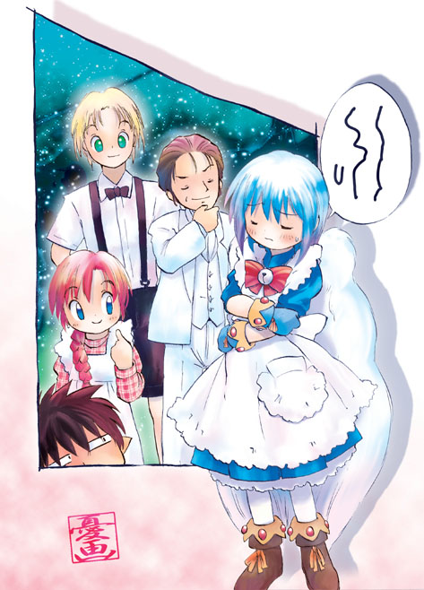

※ 前回までのあらすじ
異世界の妖精に人間の身体を召喚されてしまい、代わりに妖精少女の身体にされてしまった突然妖精少女の
長谷川幹也（みきや）君改め長谷川美姫（みき）
ちゃん。妖精の小さな身体で、えんやらやっと頑張ってます。既に妖精に召喚されてから１ヶ月半あまりが過ぎて妖精少女な生活にも慣れてきましたが、最近の
美姫ちゃんときたらもう、とても元高校生男子とは思えない程かわいらしく、というかロリロリな様子になっちゃいました♪ そんなかわいらしい美姫ちゃんを
巡ってまわりの人たちは大騒ぎ。さてさて今日はどんな騒ぎがまきおこるのかな？ 詳しくは『妖精的日常生活 第１２話 収穫祭？』までの各話をお読み下さ
い。<(_ _)>
「妖精の集会か……。いったい何があるんだろう？」
夏の日暮れ時、ワタシは街並みをはるか下に見下ろしながら空高く飛んでいた。夏とはいえ、さすがにこの高度ともなるとちょっと肌寒い。長めのスカートが特徴のエプロンドレスを着てきて良かった。ミニスカートなんか穿いてきたらお尻から風邪をひいちゃうところだったよ。
「くしゅんっ！」
風邪のことを考えたからだろうか？ そんなにも単純な頭はしていないつもりだけど、あまりにもタイミング良く盛大なくしゃみが出てしまった。こ
れならスカートじゃなくてオーバーオールを着てきたほうが良かったような気もするけど、そうすると、『今回の集会では、なるべく正装をしてきて下さい』と
いう役所の服装指定からは外れてしまう。やっぱりオーバーオールというのは普段着だもんね。
「でもどうして妖精の集会では正装をしなくちゃいけないんだろう？」
そうなのだ。実は園芸部の活動が忙しくて忘れていたけど、数週間前に役所のほうから、【夏季における妖精の集会に関するご案内】という通知が着ていたの
だ。何やらごちゃごちゃと書いてあったけど、この地区における妖精の集会を、妖精用品の専門店があるＴデパートの屋上で行うということだったのだ。ちなみ
に雨天の場合は順延らしい。別に会場自体はいくらでも屋内の部屋が用意できるのだけど、交通機関を使わずに自力で飛んでくる妖精が大半を占めるから、現実
問題として雨天の開催は無理だということだ。まあ確かに雨の日に小さな妖精が外出するのはかなり面倒なんだよね。
「カラスは夜目が効かないから、妖精の安全の為に夜に集会をするっていうのは分かるけど、夜に正装で集会をするって、なんだかパーティーみたいだな」
カラスは好奇心の強い頭の良い鳥だから、空を飛ぶ妖精はとても興味をひく対象らしくて、遊び半分で妖精を襲うことがある。実際にワタシも妖精になってす
ぐにカラスの群れに襲われて危うく命を落としかけたくらいだ。その時、もしもアイツの助けが入らなかったら、もうワタシはこの世にはいなかっただろう。
「助けてくれたのが守銭奴で無節操な色魔の海斗だったのが、唯一の問題点だったんだよねえ〜。ハアァァ〜〜……」
ワタシは海斗に助けられた時のことを思い出してため息をついてしまった。カラスの群れに襲われて絶体絶命かと覚悟したあの時……。突然現れた海斗は手に
した剣で今まさにワタシを襲おうとした一羽のカラスを斬りつけたっ！ そしてその他のカラス達がひるんだ隙に、ワタシの手を引いてカラス達がやって来られない高空へと垂直に脱出したのだ。
「助けてくれたのは良いけど、命を助けた代金として３００万円も払えだなんてぼったくりだよ」
当時は半分気が動転していたから気がつかなかったけど、十分に海斗の行為は恐喝に値するらしい。でも、『おまえの命は３００万円の値打ちも無いのか？』
と言われちゃ、意地でも払わないとそれこそ海斗に負けるような気がしてイヤだったのだ。というわけで、喫茶店のバイトをしたり生活費を浮かせる為に園芸部
の活動に参加したりとしたのだが、それなりに楽しくはあったけど苦労も多い毎日だった。特に喫茶店の仕事のおかげで無意識のうちにロリロリな言葉が出ちゃ
うこともあるし……。ホント、いろいろと大変なんだよね。わかりまちゅかぁ〜？
「でも、そんな苦労とも今日でバイバイ。だってワタシにはこれがあるんだもんね♪」
そしてワタシは、手製の肩掛けカバンを上からポンッと、右手で叩いたのだった。その中には小さく折りたたまれたワタシを自由にする書類……。海斗に対す
る３００万円の支払いの残金、二百数十万円を海斗の持つ銀行口座に対して振り込んだことを証明する振込み明細書が入っているのだ。ふふふふふ、これを海斗
に叩きつけてやったら気分良いだろうなあ〜。うう、なんだか背中がゾクゾクしてきちゃった♪ き、気持ちイイかも？
「それにしてもこの前に会ってからそんなに経ってないのに、こんな大金をポンと振り込んじゃうことができるなんて……。剣持さんってもしかしてかなり偉い人だったのかな？」
ワタシはお金が振り込まれたことを知らせるメールが届いた日のことを思い出していた。というわけでここからは回想シーンだよ♪
その日ワタシは、世の中の人間が妖精についてどんなことを考えているのかを知りたくて、インターネットを使って某巨大掲示板の妖精関連スレッド
を渡り歩いていた。基本的には妖精に対して好意的な意見が多かったのだが中にはとんでもない意見もあったりして、ワタシはもう怒りまくりだった。
「なんでそうなるのっ！？」
というわけでワタシはパソコンのモニターに向かって大声を上げたのだ。妖精はネット掲示板なんか見ないものと思い込んでいるらしいその発言は、偏見に満ち溢れていて、気分が悪くなりそう。あ〜、やだやだ。
「どうしたの？ 美姫姉ちゃん」
ベッドに寝転びながら雑誌を読んでいた幸也が、『またか？』という雰囲気でこちらを向いた。ちなみにワタシが妖精になってからはパソコンを独り占めして
いた幸也だったが、最近は剣持さんにもらったパソコンの悪影響を消す装置、【試作品２８号】のおかげで妖精のワタシでもパソコンが使えるようになり、幸也
はワタシが使っていないときにしかパソコンを使えなくなっているのだ。というわけで今の幸也は、【妖精と私】という何やらマニアックな雑誌を読んでい
た。……なんだか妖精オタクの度合いがまた進んだような。
「あっ、幸也、見てよっ！ ひどいんだよ。これ」
そう言いながら私は、幸也の元に行き、早く来いとばかりに興奮した声をあげるのだった。早く、早く見てよっ！
「ええと、『妖精を一匹飼いたいんですが、どこに行けば売っていますか？ （Ｗ 』って、書いてあるね……」
幸也も、その書き込みを読んで、しばし絶句している。やはりいくらなんでもこの書き込みは妖精に対して無神経であると感じたのだろう。そうだよね。妖精は物じゃないんだからっ！
「まったくもう、書き込んだ人の神経を疑っちゃうよね。妖精は小さくてまるで人形のようだけど、ちゃんとした個性のある人間なんだから。これだけ世の中に妖精がいるっていうのに、まだそれが分からない人がいるのかなあ〜」
ため息半分でワタシは愚痴をこぼした。幸也に言ってもしょうがないことなんだけど、言わずにはおれなかったのだ。
「ところで美姫姉ちゃん、この人の書き込みの後にもまだ書き込みが続いているんだけど、それも読んだ？」
盛大にため息を吐いて、二酸化炭素の放出による地球温暖化を加速させていたワタシに対し、幸也は書き込みの先を読むようにと促した。どうやら面白い展開になっているらしい。……のかな？
「いや、まだ読んでないけど……。ちょっと見せて」
さっきの書き込みを読んで怒りまくっていたワタシは、当然その続きの書き込みなんか読んでなかった。そしてワタシが見たそこには、こんなことが書いてあったのだ。
４６１ : 名無し妖精＠お昼寝中 妖精を一匹飼いたいんですが、どこに行けば売っていますか？ （Ｗ ４６２ : 名無し妖精＠お昼寝中
>>４６１ 妖精さんを物扱いする香具師は、このスレにくる資格なし。氏ね ４６３ : 名無し妖精＠お昼寝中 妖精は物じゃないけど、お金を出せば漏れのところに来てくれるなら、来て欲しい 夜、独りで寂しい時に妖精さんが話相手になってくれるとうれしい できるならかわいい女の子の妖精キボン。でも、かわいけりゃ男の子の妖精でも可 ４６４ : 名無し妖精＠お昼寝中 漏れも妖精さん欲しい。誰か知り合いが妖精に召喚されないかな ４６５ : 名無し妖精＠お昼寝中 だから、今はそういうことを話しているんじゃなくて、 ４６１が、金で妖精を買おうとしているってことが問題なんだろ？ ４６６ : 名無し妖精＠お昼寝中 別に、実際には売ってないんだから問題ないって ４６７ : 名無し妖精＠お昼寝中 実際に売って無くても、買おうという香具師がいれば、売ろうとする香具師も出てくる。 問題はそこだよ。漏れのかわいい妖精さんを金で売買しようだなんて許せん。 ４６８ : 名無し妖精＠お昼寝中 いつ、どこの妖精が藻前のものになったんだよ （Ｗ ４６９ : 【４６７】 いや、漏れの家には妖精さんいるし♪ ４７０ : 名無し妖精＠お昼寝中 >>４６７ それがホントならうらやましい話だな。禿しく詳細キボン ４７１ : 名無し妖精＠お昼寝中 日本国内だけでも召喚されて妖精になった人は２万５０００人以上もいるんだから、 家族が妖精になった香具師は、その数倍はいるわけだよな。 というわけで【４６７】も含めて、家族が妖精になった香具師は、ここで報告してみたらどうだ？ ４７２ : 名無し妖精＠お昼寝中 >> ４７１ 漏れ達の場合なら、家族が妖精に召喚されて喜ぶ香具師もいるだろうし、 それどころか自分自身が妖精に召喚されたがっている香具師もいるだろうが、 中には家族が妖精に召喚されて困っている家族もいるだろうことも考えるべきだ。 ４７３ : 【４７１】 スマソ。確かに一家の大黒柱を妖精に召喚されて困っている家族とか、 恋人や結婚相手を妖精に召喚されて困っている香具師もいるだろうな。 考えが足りなかった。逝ってきます……。 ４７４ : 名無し妖精＠お昼寝中 まあ、そういう香具師らはこんなところには来ない可能性は高いかも。 というか漏れの父親は蝶羽の妖精に召喚されたけど、ちゃんと仕事も続けているし、 経済的に特に問題はないから、生活する上で困ったということは無いな。 別に家族が妖精に召喚されたからといって、不幸せになるとは言いきれない。 ちなみに漏れの父親は、妖精に召喚されてからは女の子になっているけど、 今さらむさくるしい親父に戻られるほうが不幸せだ。 ４７５ : 名無し妖精＠お昼寝中 神キタ─ｏ━Ｏ━(゜゜)━(゜∀゜)━( ゜ ∀ ゜ )━(゜∀゜)━(゜゜)━Ｏ━ｏ─！！！！！ ４７６ : 名無し妖精＠お昼寝中 >>４７４ 父親が妖精少女に……。なんてうらやましい。 ４７７ : 名無し妖精＠お昼寝中 じゃあ続けて報告。実は漏れの兄貴も妖精に召喚されたんだ。 それも女の子の妖精に。羽は珍しい天使のような白い鳥の羽。 いやもう、可愛くて。毎日が夢のようだよ。 |
４７７番目の発言を読んだワタシは、目を点にしてしまった。どう考えてもこの発言を書いたのは……。
「幸也っ！ これって！」
当然のごとく大声を上げるワタシ。くるりと振り返ったワタシの目の前には、可笑しそうに笑っている幸也がいた。もう、何を笑っているんだよ。家族のことを某巨大掲示板なんかに書き込むんじゃないっていうのっ！
「大丈夫だよ。美姫姉ちゃん。名前は出していないから、この書き込みを見ても誰も美姫姉ちゃんのことだとは分からないよ」
自信満々に答える幸也だったが、ワタシは騙されなかった。
「幸也……。確か前にワタシみたいな天使のような白い鳥の羽をした妖精に召喚された例は、世界でも初めてかもしれないっていうようなことを言ってなかったっけ。見る人が見たらこれはワタシのことだってすぐに分かるんじゃないの？」
表面上は優しく、それでいて獲物を追い詰めた猫科の肉食獣のような声で、ワタシは幸也に問いかけたのだった。にゃぁ〜お♪ ごろごろごろ…… フーーーッ！！
「あははは、たぶん……、大丈夫……」
ほっぺたをヒクヒクとさせながら冷や汗を一筋垂らす幸也。もううっ！ もしかしなくても全然考えていなかったね？
「大丈夫じゃないに決まってるでしょっ！！」
頭を抱えながらそう言ったワタシは、さらに言葉を続けようとしたのだが、その時……。
ピポーーン
……と、どことなく情けない音がパソコンから鳴った。メールの着信を知らせるアラーム音だ。
「あっ、メールだよ。美姫姉ちゃん。早く見ないとっ！ 大事なメールかもしれないし」
話題を変えたいのか、やけにメールの着信にこだわる幸也。もう、考えていることがみえみえだってば。
「無視無視。妖精のワタシにメールを送ってくるような人が居るとは思えないし、どうせ幸也宛か広告メールだよ」
ワタシはそう断言すると、それを証明しようと巨大なマウスを操作した。そして受信される１通のメール。ウィルスの類ではないことを確認したワタシは、そのメールを開いたのだった……。
「ほら見てよ。『長谷川美姫様へ 約束の金額を振り込みました』と、あるだけじゃないの」
そしてくるりと振り返り、モニターを覗きこむ幸也に対して大見得を切ったのだった。ふふんっ！
「それって僕宛のメールでも、広告メールでもないんじゃないの？ 美姫姉ちゃん」
どこか呆れた幸也。えっ！？ そなの？
「だって『長谷川美姫様へ 約束の金額を振り込みました』って……。あれれ？ このメールってワタシ宛？」
なにごとも頭から否定してしまっていると見えなくなるものらしい。妖精にメールなんか来ないと頭から信じきっていたワタシは、あからさまにワタシ宛のメールだったにもかかわらず、それが自分宛のメールだとは分からなかったのだ。なんたるお間抜け……。てへっ。
「ええと、何々……。ふんふん、えっ！ そうなんだっ！！」
自分の失敗を御魔化す為に必要以上に力強くメールを読むワタシ♪ ちなみにメール本文は必要最小限のことしか書いてなかったが、ワタシにはそれで
十分だった。お父さんの会社、加賀重工の開発部の主任である剣持道彦（けんもち・みちひこ）さんが、二百数十万もの大金をワタシの口座に振り込んだという
ことを知らせるメールだったのだ。ちなみにワタシの銀行口座はこの為に作ったまだ新しいものだ。何でもワタシ名義の口座に振り込む必要があったらしい。
「お金が振り込まれたの？ だったら美姫姉ちゃんがお父さんの会社に行くのも近いんだね」
事情を知っている幸也は、お金が振り込まれた先の話をし始めた。そうなのだ。ワタシは妖精が潜在的にもつ魔法を機械的に増幅する装置を開発する為の手伝
いとして、お父さんの会社に行くことになっていたのだ。このお金はその契約金みたいなものなのだ。なお、詳しくは第１１話を読んで下さい♪ ……て、何を
言っているんだろうワタシは？
「お盆休みがあけたら会社に来て欲しいって書いてあるから、とりあえずそれまでは自由にしてて良いみたい。でもまあそれはそれとして、このお金を明日にも海斗の口座に振り込まないとね。お母さんに頼んでおこ♪」
海斗がどんな顔をするのかを想像して、クスクスと笑いを漏らすワタシ。いや、楽しいねえ。
というわけで今のワタシの手には海斗に対する借金から開放されたことを証明する振り込み用紙があるのだ♪ ふふふ、これを海斗に叩きつけたら、
海斗はどんな顔をするかな？ きっと驚くだろうな。とにかくこれでワタシは海斗に対して何の負い目も無くなったわけだから、まずは今までのワタシに対する
失礼な態度について謝ってもらおうかな？
「そうだ。今までどうも海斗と話していると興奮状態になっちゃって、いいようにからかわれていたから今度は逆に、『海斗さん、お金を払わないお客さんには
悪態をついてもかまわないと思うんですけど、ちゃんとお金を払う人、というか妖精にまで色々と悪態をついたりしたのは、やっぱりいけないと思うんですよ
ね。というわけでお金をちゃんと支払ったワタシには、それなりの態度をしてくださいね』というように、冷静に言ったらどうだかな？」
ワタシは夜空を飛びながら、ぶつぶつと独り言を言った。周りには誰も居ないし、別にいいよね。
「お金に汚い人は、お金に弱いらしいから、海斗も、『すみませんでしたっ！ 今までの美姫さんに対する無礼をお詫びしますぅ〜』なんて言っちゃったりして
♪ うふふふ、当然その言葉だけじゃ許してあげないよ。『許して欲しかったらワタシの靴をお嘗めっ！』なんて言っちゃったりして♪ うぷぷぷぷ……」
抑えようとしても出てくる笑いを漏らしつつ、ワタシは身もだえしながら夜空を飛んでいた。ちなみに妖精が飛ぶときにまとう青いオーラが、夜空に曲芸飛行のような妙な軌跡を描いていたらしい。……推測だけどね♪
「でさ、そう言われた海斗はさすがに躊躇するわけ。『えっ、そんなことまでしないといけないのか……』ってね♪ もちろんワタシはきっぱりと言いきるんだよね。『嘗めなさい。さあ、早く』ってさ。うわぁーーーっ！ 女王様だよ。良いのかな。ここまで言っても？」
うふふふと笑いながら、ワタシは独りうんうんとうなずいた。ところで、自分がごく自然に女王様の役割になっていることについては特に疑問は感じていなかった。自分が女の子だってことに慣れきっちゃったのかな？ うにゅ〜。
「あれ？ いつのまにか会場に着いちゃってる。もうそんなに時間が経ったのかな」
ふと気がついたワタシの目の前には、横に並んだふたつのビルがあった。そのふたつのビルの根元はひとつながりになっている。簡単に言えば背の高い 凹 型のビルだ。
「確か会場は、ふたつに分かれた北側のほうのビルの屋上のはず……。あっ、あった、あった。あの金網で覆われている所かな。中にテーブルとか用意されてる
し、たぶんあそこかな。でも夏場だからこんなにも高い所の風は気持ち良くて快適な温度だけど、冬場だったら北風が強いだろうから寒そうかも」
独り言が癖になったワタシは、ぶつぶつと状況を解説しながら会場へとゆっくり降下していった。なおその際、下から見上げられてもいいように足はきちんと閉じて、さらに手でスカートを押さえているのは言うまでもない。妖精乙女のたしなみだよね。
「やっぱりここだ。もう何人か妖精が集まっているんだ。へえ、子供の妖精もいるよ。ちっちゃあ〜い。可愛いなあ〜」
普段目にする子供といえば、当然人間の子供達ばかりなので、妖精の子供というのはワタシにとっても珍しい存在なのだ。実はいまだに妖精の子供を見たの
は、海斗がワタシの家に愛人達（怒っ！）を連れて来たときにいっしょにいた子供達が最初で最後だったりする。まあ、海斗はともかく、子供に罪はない。可愛
いものは可愛いのだ。なんだか妖精の子供達を見ていると胸がキューンとなってきちゃうよ。どうしちゃったんだろう？
「でも、どうやって会場に入るのかな……。ええと、入り口はどこなんだろう？ あっ、もしかしてアレかな♪」
ほとんど着地寸前まで降下したとき、ワタシはようやく入り口らしきものを発見した。
「はい、着地っと」
屋上はそのほとんどが金網で覆われていたが、出入り口の前には金網が無かった。そこにゆっくりと着地したワタシは、そのまま羽をしまうことなく入り口へ
と歩いていった。どうせ会場の中にいくつも用意されているテーブルは人間サイズだから、その上に上るにはどうしても飛ばなくてはいけないことが分かってい
たからだ。というわけで羽をしまうのが面倒くさいってわけじゃないんだよ。
「こんにちは。参加者の方ですね。お名前をどうぞ」
入り口の前には妖精サイズの長テーブルが置かれ、そこには受付らしい男女の妖精が２人いた。そのうちの男のほうの妖精は、ワタシを見ると大きな声で挨拶
をしてきたのだ。ちなみにその男の妖精は緑色のスーツを着ている。人間が着ると単なる派手なだけという印象を与えかねないスーツだったが、妖精が着ている
と何故かとても似合って見えた。やはり背中の羽がそういう印象を与えたりしているのだろうか。ちなみに一般的な透き通ったトンボ羽だ。
「あっ、はい。名前は、長谷川美姫です」
ワタシはちょっと緊張しながらも返事をした。やはり初対面の妖精と話すのは緊張するよね。
「長谷川美姫さんですね。はい、ご確認いたしました。まだ召喚されてから１ヶ月半ちょっと。人間の時には男の子だったというように記録されていますが、間違いはありませんでしたでしょうか？」
ワタシが名乗ると今度は、オレンジ色のスーツを着た女の妖精がテーブルに置かれた名簿を見て、ワタシに確認を求めてきた。うにゅ〜、『元男の子』ということを確認されるのが、なんだか恥ずかしい。
「はい。そのとおりです。元は男の子でした。今は女の子ですけど……」
消えそうな声で返事をするワタシ。召喚されて妖精になった人の半分は性転換しているということは頭では分かるのだけど、自分もそうなのだと告白するのは
今でもやはり恥ずかしい。とは言っても妖精に召喚された当初は女の子になってしまったことが恥ずかしかったのだが、最近では『今はこんなにも女の子してい
るワタシが、前は男の子だった』という事実を話すことのほうが恥ずかしくなっていたりする。自分が女の子、妖精少女であるということにはもう慣れてしまっ
たのかもしれない。
「そうですか。それは大変ですね。私は人間の時から女でしたから、まだその点は楽でしたけど、こちらの妖精は今は男ですけど、前は女だったんですよ。そうですよね、池辺さん？」
ワタシがリラックスできるようにとの配慮からか、その女妖精さんは笑いながらそう言った。雰囲気からするとどうやら日常的にこういう会話がなされているらしい。話題をふられたその男妖精、池辺さんも苦笑しつつ返答を始めた。あらら、池辺さんも大変だ♪
「山岸さん、その話はもうしないでって、言ってるじゃないですか」
困ったような、照れたような微妙な笑顔を浮かべて、その山岸さんという女妖精に反論する池辺さん。なんだかちょっと親近感かも。
「やっぱり恥ずかしいですよね。自分が元は女の子だったとか、男の子だったとか言われるのって……」
ワタシは、池辺さんの気持ちを察してそう言ったが、妖精になると同時に異性にもなってしまった人の話を聞いてみたいという気持ちは強くあるので、発言にも元気がなく、語尾もモニョモニョとしている。
「ええ、こればかりは体験したものじゃないと分からないですよ。妖精に召喚されても性転換した者と性転換しなかった者ではかなり意識が違いますね。でも、
何が恥ずかしいといって、『もともと男の子になりたかったんでしょ？』と、からかわれるのが一番恥ずかしいですね。反論すればするほど泥沼にはまっちゃい
ますし。長谷川さんもそんなことありませんか？」
ここぞという感じで、同意を求める池辺さん。でもその言葉の半分以上は、同僚の山岸さんに向けられているような感じがする。なるほど、山岸さんが池辺さんにそう言ってからかっているのか……。う〜ん、性転換しなかった妖精には確かにこの苦労は分からないのかな？
「美姫でいいです。ええ、ワタシもクラスメートや知り合いには、いつもそう言われてからかわれていますから、その気持ち分かります。妖精になりたくてなっ
たわけでも無いのに、いきなり妖精の女の子になってしまったのをそう言われてからかわれんですから、もう大変ですよ。こればっかりは性転換しなかった妖精
には分からない気持ちなんでしょうねぇ〜」
普段のことを思い出して答えるワタシ。実際、妖精少女らしさが増せば増すほど、以前の男の子だった頃のワタシを知る人はワタシのことを、『そんなにも女
の子しちゃってるなんて、やっぱり美姫ちゃんってば、前から女の子になりたかったんじゃないの？』と言ってからかうのだ。それがもう事実に反しているの
に、今が女の子らしい状態であるから恥ずかしくて、恥ずかしくて、ホントに困っちゃう。
「う〜ん、やっぱり私には分からないわね。想像はできなくも無いけど、妖精になっちゃったことに比べればたいしたことじゃないとしか思えないし……」
女妖精の山岸さんがそう言う。まあ確かに立場が違うんだから、分からないのがホントなんだろうな。
「ワタシも最初はそう思っていたんです。妖精になったことに比べれば、性転換したことなんか小さなことだって。でも妖精としての生活に慣れてくると、自分が性転換しちゃったことが段々と大きな問題に思えてくるんですよ。ええと、池辺さんもそうじゃありませんか？」
まずは山岸さんに答えつつ、今度は男妖精の池辺さんに同意を求めるワタシだった。
「そうそう、そうなんですよ。私も最初は性転換したことなんか小さなことだと思ってたんですが、やはり今まで女として生きてきたのに、いきなり男になっちゃうっていうのは、大変なんですよ。特に妖精の場合はね。美姫さんもがんばってくださいね」
池辺さんは、やけに力を込めて私を励ましてくれた。それにしても『特に妖精の場合は』って、いったい何のことだろう？ 隣では山岸さんが口を押さえてクスクスと笑っているし……。
「そう言えば今の池辺さんって絶倫だもんね。そりゃ大変だわ♪ アハハハ……」
とうとう山岸さんは、大声で笑い出してしまった。人間同士の会話で、いきなりこんな状態になってしまったらかなり失礼だけど、妖精は感情が素直に表に出
てくるから、こういう反応は特に不思議でも何でも無いのだ。まあ、素直と言えば聞こえは良いけど、結局は感情のコントロールが出来ないということなんだけ
どね。
「あっ、他人事のように言ってるけど、山岸さんだってかなりすごいって噂じゃないですか。聞きましたよ。始まってから終わるまで、延々としてたそうですね。女同士で……」
えっ、２人とも何の話をしているんだろう？ もしかしてそれって、Ｔデパートの大島さんが前に言っていた“妖精狂いの季節”に関係する話題なのかな。あっ、駄目。考えたらなんだか身体が火照ってきちゃった。
「あの、もしかして、お２人が話している話題って“妖精狂いの季節”のことなんですか……？」
恥ずかしいから、それこそ消え入りそうな小さな声でワタシは質問した。どうしてみんなこういう話題を明るく話せるんだろう？ やっぱり大人だからかな。
「ああ、ごめんなさい。２人だけで盛り上がっちゃって。ええ、そうよ。妖精になると年に２回の発情期があるってことはもう知っているわよね。それが“妖精
狂いの季節”なんだけど、やっぱり発情の度合いにも個人差ってものがあって、この池辺さんは、それはもう出しても出しても、まだまだいくらでも出てくるん
だって。すごいわよね１日あたり最低でも７発はいけるっていうんだから♪ 美姫さんも元男の子なら何のことか分かるわよね？」
山岸さんの言葉に対して、『分かりますっ！』と答えるわけにもいかず、ワタシは顔を真っ赤にしながらうつむくだけだった。それにしても１日あたり最低でも７発だなんて……。ホントにすごいっ！
「山岸さん、そんな話題をふるから、美姫さんが困っているじゃないですか。申しわけないです。美姫さん」
池辺さんは軽く山岸さんをたしなめると、ワタシに対して許しを求めた。ええと、大丈夫。ちょっと恥ずかしかっただけ。
「いえ、気にしないで下さい。ところで、もう会場のなかに入っても良いんですか？」
このままこの話題を話しつづけていると、なんだかとんでもないことになりそうだったので、ワタシは本来の目的に戻って会話を再開した。長距離を飛んで来たからちょっと疲れちゃったしね。
「もちろん良いですよ。ただし会場に入る時には子供に気をつけてくださいね。会場全体は細かい網目の金網で覆われていますけど、これは子供達が勝手にどこ
かに行ってしまわないようにするためなんです。そして出入り口は扉が二重になっていますから、外側の扉を開けて中に入ったら、きちんと外側の扉を閉めてか
ら中側の扉を開けて会場に入ってください」
注意事項を述べる池辺さん。なんだかまじめ。
「はい。分かりました」
それに対してワタシも素直に返事をする。確かに妖精の子供が勝手に外に出てしまったら、飛べる分だけ人間の子供よりも厄介だということは想像出来る。ホント、注意しなくっちゃ。
「では美姫さん、お入り下さい。そろそろ日が完全に落ちますから、集会の開始時刻はあと３０ほど後になります。なお各テーブルに用意された食事や飲み物は、もう手をつけていただいてもかまいませんので、ご自由にしてください」
山岸さんも、仕事モードの顔つきに戻って案内を言う。おそらく会場の中には子供の妖精もいるから、『目の前の食事に手をつけるな』と言っても無理なんだろう。ワタシは適当に相づちを打ちながら、こくこくとうなずいた。
「普段なかなか会えない他の妖精達との会話というのも楽しいものですから、退屈はしないと思いますよ。それに集会の開始時刻と言いましても、単に集合時間のことですから、実質上すでに集会は始まっているわけです。それでは美姫さん、初めての妖精の集会をお楽しみ下さい」
山岸さんの言葉を引き継いで、池辺さんはそう言うと、ポーズを取りながら入り口の扉を開けてくれたのだった。いよいよ……だね。取りあえず海斗を探して、この振込明細書を叩きつけてやらなくては。入り口を前にして、ワタシは心の中で微笑んだのだった♪
「さてと……。海斗はどこかな？ とりあえずは会場をひととおり回ってみるかな。役所の通知が正しければ、このあたりの妖精は特別な用事の無い限り全員がここに集まっているらしいから、海斗も絶対にいるはずなんだけどな……」
そうなのだ。別に今日は海斗と会う約束はしていない。なぜかって？ だってこういうものは予告なくいきなり突き付けてやったほうが効果的そうな
んだもん。ふふふ、そのために振込をしたのはワタシが出発する直前だったのだ。これなら海斗も残高チェックなんかしていないだろうしね。あ〜、楽しみだね
♪
「それにしても上空から見ていた時は、ビルの屋上にある小さな会場という感じだったけど、こうして中に入ってみるとものすごく広く感じるなあ。ふ〜ん、会場の中には妖精だけじゃなくて人間も居るんだ。……なるほど食事や飲み物の用意をするには人間が居たほうが便利なのか」
会場にはいくつもの丸テーブルが置かれていた。ただし椅子は置いてない。だって人間用の椅子なんて必要無いからね。代わりに丸テーブルの上には木製の四
角いブロックが適当な配置でいくつか置いてあり、それが妖精用の椅子になっているらしい。すでに何人かの妖精達がブロックの椅子にすわって食事に手をつけ
ながらおしゃべりをしている。……そんなに期待していなかったけど結構おいしそう。
「どうせなら出来たての料理のほうが良いよね。そのほうがおいしいもん♪」
海斗のことはひとまず置いといて、ワタシは食欲に忠実になることにした。ぐるりと見渡して出来たての料理を運んでいる人間を見つけると、その後を飛んでつけていったのだ。ふふふ、あの人が料理を置いたテーブルに着地することにしようっと♪
「まっ、海斗を探すのは食事をしてからでも遅くないよね」
そう言いながら飛んでいると、急に何かがぶつかってきたっ！ わわっ、何、これっ！？
「きゃっ！」
空中でバランスを崩して、危うく墜落しそうになったワタシは、女の子のような悲鳴をあげてしまった。まあ、女の子には違いないから、別にそれはいいんだけど。もにょもにょ……。
「うぇ〜んっ！ びえぇぇぇんっ！」
ワタシが自分の性別について一考していたその瞬間、赤ちゃんの大きな泣き声がワタシの耳に入ってきた。どうやらぶつかってきたのはこの赤ちゃんらしい。
ハッとしたワタシは、半ば反射的にその赤ちゃんを抱きしめたのだった。危ない、危ない、もう少しでこの子も落っこちちゃうところだったよ。
「こらっ、暴れちゃ駄目だってっ！ うわっ！ 落ちるっ！！」
パニックになった赤ちゃんの妖精は、ワタシの腕の中で暴れまくっている。まったく、落ちるかも知れないなんてことは考えないんだろうか？ う〜ん、さす
がに生まれた時から妖精をやっているだけのことはあるね。ワタシ達みたいなにわか妖精ではこうはいかないかもしれない。空中にいることに完全に慣れちゃっ
ているよ。
「びえぇぇぇんっ！ うぇ〜んっ！」
泣きつづける赤ちゃん。とにかくこのまま空中にいては危ないから、ワタシは手近なテーブルに降りることにした。ちなみにそのテーブルには食事や飲み物が
既に用意されていたけど、まだ他の妖精は誰も座ってはいないようだ。それに見渡してみると近所のテーブルにもまだ妖精の姿は無い。ということはこの赤ちゃ
んはもっと遠くにある別のテーブルから飛んで来たわけか。う〜ん、ちょっと面倒かも？
「ほらほら、いい子だから泣きやもうね〜。ああっ！ 赤ちゃんをあやすってどうやったら良いのっ！」
とにかく泣きつづける赤ちゃんをあやすのが先と、ワタシはそのことで頭がいっぱいになった。このまま放置しておくことなんか出来ないし、なんとかしなくっちゃっ！
「え〜と、ベロベロ、バァーーッ♪ 独りで怖かったのかなぁ〜？ お姉ちゃんがいるから、もう安心でちゅよ〜」
自然と口調が子供っぽくなってくるのはしょうがないとして、赤ちゃんをあやしていると、ふんわりした気分になってきちゃうのかな？ なんだかそんな気分。
「ひっく、ひっく、ひっく……」
赤ちゃんもワタシに気がついたのか大声で泣くのを止めて、ワタシの顔を不思議そうに見ている。ふふふ、やっぱりお母さんの顔と違うからね。でも……。ちっちゃな赤ちゃんって、ホントに可愛いーーっ！ 最近は可愛がられるばかりだったから、なんだか新鮮♪
「もう大丈夫、お姉ちゃんが、ママを捜してあげるからね」
この子のお母さんがこの会場の中にいるのは間違い無いわけだし、見つけること自体はそう難しい事では無いはず。そう判断したワタシは、自信を持って赤ちゃんに断言した。するとその気持ちが伝わったのか、赤ちゃんも完全に泣くのを止めてニコリと笑ったのだった。
「ダアァァ……、ウキャァーーッ♪」
ニコリと笑うだけではなく大声で笑い出した、というか、こっちが驚く程の勢いで叫びながら笑う赤ちゃん。う、そんな顔をされたら……、もう、ワタシ……、ワタシ……。
「か、かわいいーーーっ！」
とうとう堪らず、赤ちゃんを胸の前で抱きしめてすりすりとほっぺをすりあわせるワタシ。ああ、妖精の肌って人間の肌に比べるとものすごくきめ細かくてすべすべしていると言うけど、妖精の赤ちゃんのお肌に比べたらっ！
「なんだか、胸がキューンとなって来ちゃった。何なんだろう。この気持ち」
今まで経験した事が無い感情に戸惑いながらも、ワタシは腕の中の赤ちゃんの可愛らしさ、愛らしさに、もうメロメロだった。だって本当に可愛いんだもん。
人間だった頃には赤ちゃんを見てもこんな感じにはならなかったけど、やっぱり女の子になっているのが関係しているのかな。うーん、どうなんだろう？
「おや、美姫じゃないか。なんだなんだ、母性本能に目覚めちゃったのか？」
赤ちゃんを抱いて、ほっぺにすりすりしていると、どこからかアイツの声が……。これは……、もしかしてもしかすると……。
「海斗ッ！」
赤ちゃんを抱いている事を忘れて、思わず大声を出してしまったワタシだった。だってびっくりしたんだもん。自分でも心のどこかで赤ちゃんをごく普通に抱いてあやしているワタシ自身の姿を、ちょっと恥ずかしく思っていたのかもしれない。
「びぇ〜〜ん、あーん、あーっ、あーっ！」
すると、今までおとなしくなっていた赤ちゃんが、まるでスイッチを入れたかのように泣きだしたのだ。それもさっきよりも盛大にっ！ まったく、どうしてこうなるのっ！？ これもそれもみんな海斗のせいなんだ。うん、きっとそうだよ。
「ああ、まったく何をやってるんだよ。赤ちゃんを抱いているのに、大声を出すやつがあるか。美姫もまだまだだな」
海斗はそう言うと、泣きつづける赤ちゃんをワタシに代わって抱き抱えた。なんだかやけに手つきが良いじゃないか。男のくせに……。あっ、そう言えば海斗
の奴ってば今の見た目は妖精少年だけど、人間だった頃は女子大生のお姉さんだったけ。……でも、それにしても手つきが良いなあ。なんだか面白くない。う
にゅ〜。
「何がまだまだなんだよ」
海斗と話す時は、何故かいつもささくれだった気持ちになってしまう。何故だかは分からないけど、このもやもやしたような、いらいらしたような気持ちは
いったい何なんだろう。とにかく、ワタシは、むすっとした声と口調で、赤ちゃんを上手にあやしている海斗にそう言ったのだった。
「いや、赤ちゃんを抱いていた美姫の顔はものすごく幸せそうだったから、もしかして母性本能に目覚めたのかと思ったけど、その様子じゃ、『まだまだだな』と思っただけだよ。そうだよねぇ〜、ボク♪」
いつもの口調とは全く違う海斗は、赤ちゃん妖精を上手にあやしたのだった。途端にきゃっきゃっと笑い出す赤ちゃん。それにしてもパッと見ただけで赤ちゃんの性別なんてよく分かるね。ワタシなんか全然分からなかったのに。
「そんなことより、いつワタシが赤ちゃんを抱いて幸せそうな顔をしていたっていうんだよ。そんな顔なんかした覚えなんて無いからね。ワタシはッ!」
ちょっと恥ずかしくなったのと、海斗に対して素直になれない気持ちが混ざりあって、ワタシはついつい憎まれ口を叩いてしまった。ううう、今日のワタシは海斗に対してとことん優位に立てるはずだったのに、どうしてこうなるのっ！？
「自分でも分かってるくせにとぼけちゃって……。美姫は赤ちゃんを抱いてた時、これ以上は無いほど幸せそうな顔をしてたぞ。オレは見てたからな」
ワタシの否定の言葉を、さらに頭から否定する海斗。くうぅぅ〜、どうやら認めざるを得ないらしい。悔しいけど。
「だって、ホントに赤ちゃんが可愛かったんだもん……」
ほっぺたをぷうっと膨らませて、口を尖らせながらぶつぶつと言い訳をするワタシ。なおかつ目には見えない小石を蹴っていたりする。
「まあ、何だな。まだまだだけど、美姫にもちゃんと母性本能があるということだな。母性本能の基本は、赤ちゃんを素直に可愛いと思うことだから」
海斗は、腕に抱いた赤ちゃんをあやしながら、何もかもお見通しというような顔でワタシにそう言った。
「えっ、そうなの？ 母性本能ってそういうもんなの？ 赤ちゃんを可愛いと思う気持ちが母性本能なの？」
なんだか盲点を突かれたような気がして、ワタシは海斗に疑問をぶつけたけど、別に答えは期待していなかった。というか、既に答えは分かっているような感じだったからだ。ワタシはそのまま自分の考えの中に沈んでいった。
それにしても、そうかあ……、母性本能ってもっとすごいことのような気がしていたけど、赤ちゃんを可愛いと思う気持ちが母性本能なら、ちょっと前まで男
だったワタシにだって母性本能があるんだ……。うっ、そうだよ。なんだか最近、忘れかけてたけど、ワタシってホントは男だったんだよ。何でそのワタシが母
性本能があると言われて喜ばなくちゃいけないのっ！？ なんだかものすごく複雑な気持ち。
「どうしたんだ美姫。何を考え込んでいるんだ？ おっ、そうか……。もしかして美姫も赤ちゃんが欲しくなったのかな。うんうん、良い心がけだ。どうだ、美姫。美姫がお母さんになるのを手伝ってあげようか？」
ワタシが自分自身の中にある母性本能について考え込んでいると、海斗がやけに明るい声で話しかけてきた。ん？ 何？ ワタシがお母さんになるのを手伝っ
てあげるって、それって、いったい……。一瞬、海斗が何を言っているのか理解出来なかったワタシだったが、次の瞬間には海斗の言いたいことが理解出来てし
まったのだったっ！！ もうっ、海斗ったら、何を言いだすんだよっ！！
「き、気持ち悪いことを言わないでよっ！！ お母さんになるのを手伝ってあげるって、まさか、まさか……」
わなわなと身体を悪寒に震わせながら、ワタシは震える手で海斗を指差しながら、ようやくそこまでの言葉を口にした。それ以上先のことは言いたくも無いっ！！
「まさかもなにも、美姫が想像したようなことをすれば、美姫もお母さんになって赤ちゃんを抱き放題になれるぞ。それにな……」
そこまで言うと海斗は、シーッと、人差し指を口の前に立てて、声を急にひそめたのだった。いったい何だというのだろう？ わざわざ聞く気にもなれなかったので、ワタシはそのまま黙っていた。すると海斗から出てきた言葉は……。
「……とっても気持ち良いんだよ。アレは。特に今の美姫は妖精の女の子だから、その気持ち良さは人間の男だった時とは比べものにならないんだけど、経験し
てみたくはないのか？ オレに言ってくれればいつでも手伝ってあげるんだけどな。こう見えてもオレも元は女だったし、女の身体のツボは完全に心得ているか
ら、安心だぞ♪」
口からにゅっと牙のような犬歯をのぞかせてにやりと笑うと、海斗はワタシの身体を上から下まで嘗めるようにして見たのだった。き、気持ち悪い視線を絡ませるんじゃないっ！
「な、何が安心なんだよっ！」
ワタシは猛烈に海斗に抗議した。一瞬、海斗に抱かれた赤ちゃんがワタシの大声に驚いてまた泣きだすのではないかと思ったが、何故か赤ちゃんは海斗に抱かれていると安心しきっているのか、ニコニコと笑っているだけだった。まったく腹が立つったらありゃしない。
「そりゃあ、女の身体はデリケートだからな、下手な奴が触ると気持ち悪かったり痛かったりするだけなんだけど、その点、女の身体を知り尽くしたオレなら、美姫を確実に気持ち良くしてあげられるし、漏れなくおまけもついてくる。だから安心♪ というわけだよ」
ほっほっほっ、と小さく笑いながら答える海斗。でも、おまけってもしかして赤ちゃんのこと？ それって、それって、ワタシが産むのっ！？ そんなバカなことってっ！ 今はこんなだけど、ちょっと前まで男だったこのワタシがっ！！
「全然、安心じゃないっ！ 誰が赤ちゃんなんか産むもんかっ！ それも海斗なんかの」
ワタシも妖精の少女であることには慣れてきたけど、まだ赤ちゃんを産んでお母さんになる気はない。というかワタシは妖精の女の子にはなっているけど、何
というかどこか一種コスプレ気分というものがあって、ワタシの身体には赤ちゃんを産むことが出来る能力が本当に備わっているのだということにどうしても実
感が無いのだ。
「おやおや、無理しちゃって。じゃあこの子をもう一度抱いてみたらどうなるかな？ ほら、どうぞ」
海斗はワタシが言った思いっ切りの拒絶の言葉を軽くいなすと何を考えたのか、抱いていた赤ちゃんをワタシのほうによこしたのだった。赤ちゃんもワタシを
見てその可愛いくて小さな手を伸ばして来たので、ついワタシも赤ちゃんに手を伸ばし、気がついたらまたワタシの腕の中にその赤ちゃんが収まっていた。あう
う、ぷにぷにしていてホントにかわいい♪
「何を考えてるんだよ。海斗は」
赤ちゃんの可愛さに自然と頬が緩むのを何とか意思の力で引き締めて、ワタシはなるべく冷たい感じを与えられるような口調で海斗に質問したのだった。うう、この子、おっぱい撫でてる。ふにゃあ〜、さ、触らないで。お願いだから。
「何って、赤ちゃんを抱けば、またまた美姫の母性本能が刺激されて、赤ちゃんを産みたくなってくるんじゃないかと思ってね。どうだ？ だんだん産みたくなってきたんじゃないのか？」
海斗はそんなことを考えていたのか。ワタシは呆れかえってしまった。いくら妖精が感情に素直だといっても、そんな単純なことで赤ちゃんを産みたくなるな
んてことがあるわけ無いのに。それともそういうことってあるのかな？ どう反応すれば良いのかワタシが悩んでいると、背後から安堵しきったような声が聞こ
えてきた。
「ああ、よかった。由宇太（ゆうた）ちゃん、ここに居たのね」
何事かとふりかえってみると、ワタシと海斗が立っているテーブルからやや離れて、その声の主は浮かんでいた。見た目、４〜５歳ぐらいの男の子と女の子の
妖精を両手につないだ、薄い緑色のトンボ羽をした若い妖精のお母さんだ。そのまま３人はふわりとテーブルに着地すると、ワタシ達のほうに歩いてきたのだっ
た。きっと、この赤ちゃんのお母さんと兄姉なんだろうな。
「由宇太ちゃんって、この子のことですか？」
ワタシは赤ちゃんをちらりと見て、そのお母さん妖精に確認した。赤ちゃんもお母さんの声が聞こえたのか、あたりを探しているようなしぐさをしている。なるほど……。それはいいけど、いつまでおっぱいを触っているのかな〜？ この子はっ！
「ええ、まだ飛び始めたばかりなもので、ちょっと浮かんでいたところを風に飛ばされて、あっという間に見失ってしまってたんです。でも、みつかって良かった」
質問の答えになっていないような返答だったが、逆に心配から安堵へと変化したその口調が、その妖精が、この子の母親であることを証明しているかのようだった。
「そうですか。それは心配だったでしょうね。……ほら、由宇太ちゃん。お母さんが迎えに来てくれたよ」
胸の前で抱いていると、いつまでも由宇太ちゃんがワタシのおっぱいを触り続けているので、ワタシは由宇太ちゃんを目の高さにまで持ち上げると身体の位置を変えて、由宇太ちゃんの視線の先にお母さん妖精がくるようにしたのだった。
「あーっ、あーっ！」
すると由宇太ちゃんはようやくお母さんをみつけることが出来たらしく、ものすごく喜びだした。うんうん、良かったね。ワタシも触られなくなって良かった。良かった♪ ……でも、ちょっと気持ち良かったかな。
「由宇太ちゃんをあやしてくれててありがとうございます」
由宇太ちゃんをワタシの腕から受け取りながら、そのお母さん妖精は御礼の言葉を口にした。ちなみに由宇太ちゃんのお兄ちゃんとお姉ちゃんは、お母さんの
スカートのすそをしっかりと握りしめている。ちょっと緊張しているのかな。でも、これぐらいの大きさの子供もやっぱり可愛い。さ、触っても良いかな。
ちょっとだけなら良いよね。
「いえいえ、どういたしまして。それにしても、お兄ちゃんもお姉ちゃんもそんなに緊張しちゃってるけど、そんなにも由宇太ちゃんのことが心配だったのかな？ いい子だね。なでなで……」
ごく自然に（？）、ワタシは２人の幼児の頭をなでなですると、続けてごくあたりまえにしゃがみこんで顔の高さを合わせて左のほっペで男の子と、右のほっ
ペで女の子と、ダブルなすりすりをしたのだった。ああ、人間とすりすりするよりも妖精同士のすりすりって、肌がきめ細かい分だけ、よけいに気持ちいいか
も。
「まあ、なんにしてもこれからは気をつけたほうがいいな。空を飛び始めたばかりの子供はどこに飛んで行くか分からないんだから、目を離していたら文字どおり子供の命にかかわるぞ」
ワタシが２人の子供相手にぷにぷにな気持ちでいた時、ワタシの横に立っていた海斗は真剣な口調で由宇太ちゃんを抱いているお母さん妖精に注意をした。あ
まりにも真面目な口調に驚いたワタシが海斗を見てみると、当然、顔までキリリとしていた。なんだか守銭奴で色魔な妖精の面影はどこにもないじゃないのさ。
ち、畜生。格好良いじゃないか。海斗くせに〜っ！
「すみません。私が悪いんです……」
しゅんとして落ちこむお母さん。なんだか羽まで消えそうな感じになっている。そうかあ、妖精の羽は魔力の現われだから、気分が沈むと羽の存在感にも影響が出るんだ。
「いや、分かってくれれば良いんだけど。……それからおまえ達も、弟の面倒をちゃんと見ないといけないぞ。お兄ちゃんにお姉ちゃんなんだからな。わかったか？」
そのまま海斗はワタシの両横にいる２人の子供たちに厳しく、それでいて優しい口調で話しかけた。ちなみにワタシは子供の身長に合わせてしゃがんでいる。
そこに立ったままの海斗が話しかけているので、なんだかワタシまで注意をされているような形になってしまった。……駄目だ、このままでは振込用紙を突きつ
けて海斗に対して圧倒的に優位に立つワタシの計画がっ！
「「うんっ！」」
２人して頭を大きくうなずかせて返事をする子供たち。元気いっぱいのしぐさが可愛いんだけど、相対的にワタシの元気は減少していったのだった。
「よし、良い子だ。これからはちゃんと弟の面倒を見るんだぞ」
やけに爽やかな笑顔の海斗。これが愛人を何人も抱えてる不道徳な妖精とはとても思えない。どうしたんだ海斗？ 何か変なものでも食べたのか？ そしてそ
の海斗に対して何の疑いも持たずに素直に返事をする子供たち。２人はワタシの横から離れて海斗のほうに歩いて行った。う〜ん、これで良いのか？ ２人とも
海斗の中身を知らないから……。ワタシがそんなことを考えていると、1人になったワタシにそっと寄ってきたお母さん妖精が、ワタシの耳に口を寄せて小さく
ささやいてきた。
「子供好きな良い旦那さんになりそうですね。逃がしちゃダメですよ。頑張って下さいね♪」
女同士の気安さというやつだろうか？ お母さん妖精は、ワタシの横にピタリとくっつく程近づいてきたのだった。そ、それにしても何を言ってるの！？ このお母さんはっ！！
「違いますっ！ そんなんじゃありませんっ！！」
自分でもびっくりするほどの大声が出てしまい、慌てて口を押さえるワタシだった。また由宇太ちゃんが泣きだしたら困るもんね。でもそんなことより、ワタ
シはお母さん妖精にそんな誤解をされたということに対して、とてもショックをうけてしまった。他人の目から見るとワタシと海斗って、そんなふうに見えるん
だろうか？ まったくとんでもないよね。
「そうなんですか？ 見たところ御二人ともけっこう良い雰囲気だと思うんですけど。……ああ、まだ友達以上恋人未満な関係なんですね♪」
どうやらこのお母さん妖精は、どうあってもワタシと海斗の関係を恋人として理解したいらしい。だからそんなんじゃないんだってば。どうして分からないかなあ……。ワタシはどう言えば良いものか、うなったり口をパクパクと動かすだけだった。
「ふふふ、美姫。照れなくても、オレとお前の仲じゃないか。今度の妖精狂いの季節では２人の愛の結晶を作るって約束しただろ。２人の子供だからきっと可愛いぞ。それに美姫がオレの子供を産んでくれたら、あの件だってチャラにしてあげられるって、前から言ってるだろ」
勝手なことを言う海斗に、ワタシは怒りがふつふつと沸いてくるのだった。しかしこれでハッキリしたな。海斗はワタシが借金とされていたお金をすべて海斗の口座に振込み終わったことをまだ知らないんだ♪ よお〜し、これは面白くなってきたぞ。でもその前に……。
「いつ、誰が、どこで、そんな約束をしたっていうんだよっ！」
と、突っ込みを入れると同時に、海斗のボディに軽いパンチを一発お見舞いするワタシ。妖精としては頑丈そうな身体をしている海斗相手に女の子なワタシが
遠慮してパワーをセーブする必要は無いのかもしれないが、一応ギャラリーも居るので不本意ながら軽いパンチにしたのだ。もっとも思いっきり力を込めたパン
チだとしても、海斗にはダメージを与えられそうにないのがちょっと悔しい。妖精だって人間と同じで男と女とでは筋力に差がありすぎるんだもん。
「あらあら、やっぱり仲がよろしいんじゃないですか。では美姫さん。がんばってくださいね。ファイトですよ♪」
そのままお母さん妖精は３人の子供を連れて飛び立って行ってしまった。ううう、だから海斗とはそんな関係じゃないんだってば……。
「どうするんだよ。誤解されちゃったじゃないか」
しばらくワタシと海斗は２人して、お母さん妖精達が飛び去った方向をじっと見ながらテーブルの上でたたずんでいたのだが、みんなが見えなくなった頃、ワタシはぼそりと海斗に文句を言ったのだった。海斗とワタシが良い仲だなんて、誤解だとしても冗談じゃないっ！
「じゃあ、誤解じゃ無くなるようにしてやろうか？ いつでもオレは既成事実を作ってもいいんだぜ♪」
なんと海斗はそんなことを言いながら、ひょいとワタシのあごを持ちワタシの顔を上に向けると、牙の生えたその口をすうっと近づけてきて……っ！ 何、
何っ！？ ワタシの目の前に海斗の顔があって、その瞳のなかにワタシの顔が移りこんで……って、これって、これって、もしかしてキスの体勢なんじゃっ！！
ああっ、なんだか前にも同じ展開があったはずなのに、なんたる不覚っ！！
「な、何をするんだよっ！」
既にこのような状況は１度経験しているにもかかわらず、やはりどう反応したら良いのか何も考えられなかったワタシだったが、なんとかハッと気がついて慌
てて海斗の胸もとをドンっと突き飛ばしたのだった。あ、危ない。海斗なんかにキスされたらそれだけで妊娠しちゃいそうだよ。ああ、嫌だ。ああ、気持ち悪
い。
「おやおや、抵抗しないのかと思ったのに、残念、残念♪」
海斗はワタシに突き飛ばされたことはまったく意に介さず、というか完全に無視をして、自分のあごを右手で撫でながらそううそぶいた。ううう、まったく海斗の奴ってば油断がならない。守銭奴で色魔だとは思っていたけど、ここまでとんでもない奴だったとはっ！！
「いきなりだから、とっさに反応できなかっただけだってば。分かっていたらあんなにも接近する前に抵抗したよ。もう絶対にっ！！」
ワタシはこれ以上は無いぐらいの勢いで断言した。しかしこの調子では海斗のペースに引きずられたままになってしまうと気づいたワタシは、いよいよ本日の奥の手を出すことにしたのだった。ふふふ、見て驚け♪
「それよりも、今日はこれを渡したかったんだ」
その一言だけを言うと、ワタシは肩掛けカバンの中から振込み明細書を取り出して、海斗の目の前で広げたのだった。さあて、いよいよ海斗の驚く顔が見られるぞぉ〜。
「これは？」
案の定、いぶかしむ海斗。どうやらまだ何がなんだか理解が出来てないみたい。へへん、やったね。
「ふふん、金額をよく見てみるように。ほらほら、ちゃんと目を開けて」
ワタシは鼻息も荒く胸を反らすようにして威張りながら、海斗に振込み明細書を突き出したのだった。もちろん明細書をヒラヒラとさせるのも忘れない。お約束だよね♪
「もしかしてこれは……。美姫、お前……」
じっと振込み明細書に目を落としていた海斗だったが、ようやく状況を理解したみたい。ふふふ、ああ、気持ちいい。やったね。これこれ、この瞬間を待っていたのさ。ううう、ゾクゾクしちゃう。
「分かったみたいだね。どうっ！？ もうこれで借金とはおさらば。海斗に文句を言われる筋合いは何も無くなったということなんだけど。おわかり？」
更に威張るワタシ。もう、胸を反らしすぎてひっくり返りそうだよ。でも妖精だから羽を使えば大丈夫だけどね。
「美姫、お前……。何かヤバイ仕事でもしたんじゃないのか？ これだけは言っておくけど、身体だけは大事にしろよ。丈夫な赤ちゃんを産めなくなったら困るじゃないか」
何だか期待していた反応と違う。海斗のヤツってば、何を言い出すんだよ。まったくもうっ！
「ヤバイ仕事って何だよ。詳しくは言えないけど、これはちゃんとした仕事の契約金なんだからね」
ワタシは、海斗に変な誤解を与えたくないので、とりあえず反論したのだが、詳しい仕事の内容は剣持さんに口止めされているから、これ以上のことは言えないのだ。う〜ん、言いたいけど言えないっ！
「契約金という事は、まだ仕事そのものはしていないということか。ますます怪しいなあ。美姫、騙されてるんじゃないのか？ 仕事に行ったらそのままマニアに売り飛ばされて……。なんてことにはならないだろうな？」
海斗ったら、完全に誤解してるよ。ワタシが何か変な仕事でもしたとか、騙されてるとか。もう、そんな事ないのに。海斗にホントのことを話してやろうか？ でも秘密だし……。
「とにかくまともな仕事と言ったら、まともな仕事なのっ！！」
どう言えば良いのか、分からなくなったワタシは、とにかく大声で喚くように言ったのだった。そして更に言葉を続けようとしたとき、誰かの気配がした。振
り返ったワタシがそこに見たのは、どこかはかなげな影の薄い子連れの女妖精だった。うわあっ！ 今度は別な親子妖精だよ。まったく次から次へと……。
「海斗さん、お話中のところ申し訳ありません。この子、さっきから聞き分けが無いものですから、出来るだけ早めにテーブルのほうに戻ってきていただけると嬉しいのですが……」
その子連れの女妖精は、なにやらとても清楚な感じで、海斗にそう言うと、ワタシに目を合わせてゆっくりと優雅に会釈をした。つられてワタシも慌ててぺこりとお辞儀をしたが、突然のことだったのでどうにもぎこちなくなってしまった。
「パパ〜、早く帰ってきて〜」
一方で、これは元気いっぱいの子供が舌足らずな声で可愛くしゃべる。服装からして 男の子のようだ。……それにしても『パパ』って海斗のこと？ あっ、駄目。なんだか知らないけど、気分がいらついてきちゃったみたい。どうしたんだろう。
「涼子（りょうこ）、あんまり無理しちゃ駄目じゃないか。まだ病み上がりなんだから。……おーい、誰か来てくれっ！！」
海斗は慌てて、その清楚な妖精、涼子さんのもとに駆け寄ると、その肩を抱き……。肩を抱きっ！！ そして二つ三つ離れたテーブルのほうに向かって呼びか
けたのだった。なんだ、色々と探したけど、海斗はこの近所のテーブルに陣取っていたんだ。愛人たちといっしょに。なんだかな〜。
「海斗さん、これぐらい、ちゃんと飛んで帰れますから」
涼子と呼ばれた妖精は海斗にそう言ったのだが、まあ色々な想いはとりあえず横に置いといて、冗談抜きで涼子さんの具合は悪そうだった。ちなみに涼子さん
の羽はトンボ羽よりもさらに薄くて触ると破れてしまいそうな様子だった。まるでウスバカゲロウの羽みたい。なのに、彼女が連れている子供の羽は何故かコウ
モリ羽……。妖精にも遺伝学が適用出来るならば、この子の父親って海斗なのかな？
「海斗さん、何かあったんですか？」
しばし自分の中に思考が沈んでいたけれど、新たな妖精の声にハッとワタシは我に返った。この声は、たしか海斗が前に家に連れてきていた愛人の……。
「やあ、明里か。おいおい、みんなで来ちゃったのか。1人か２人だけで良かったのに」
今、声を駆けてきたのは、カラスのような黒い鳥の羽をした妖精の明里（あかり）さんだった。その後ろにはカブトムシのような羽をした妖精の朋美（とも
み）さん、コウモリ羽の妖精の明日香（あすか）さん、そして蛾のような羽をした妖精の友花（ゆか）さんもいた。……この４人、いつもいっしょに行動してい
るのかな。それに子供達はどうしたんだろう？ 誰かに預けて来てるのかな？
「あら、何かと思ったらいつかの白い羽をした“可愛い”妖精さんじゃないの。確か美姫さんだったっけ。ようこそ妖精の集会へ。あなたがこれからどうなるのか楽しみにしてるからね」
明里さんはワタシに気づくと、ちょっと刺のある声でワタシに挨拶をする。
「こんばんは。明里さん。これからが楽しみってどういう意味ですか？」
ワタシのほうもちょっとムッとしつつ、聞き返す。駄目だなあ、どうしても感情的になってくるよ。
「明里さん、その方とお話をしている場合じゃないんじゃないですか。ほら、あそこに涼子さんが」
明里さんがワタシに何かを答えかけようとした時、コウモリ羽をした妖精の明日香さんが、口をはさんできた。少々おっとりしているっぽい顔つきなのに、今は真剣な表情になっている。
「呼んだのはそのことなんだ。みんな、涼子を俺達のテーブルのほうに連れていってやってくれ。１人で飛ばすと、危ないからな」
海斗はそういうと、涼子さんの肩を抱いて、４人の前に差し出した。それを見て４人は口々にしゃべりだした。ああ、なんだかキンキンと声が響いてうるさ
い。そうか、妖精の声って大勢がいっせいにしゃべるとこんなにもうるさく感じる声なんだ。小さな子供が大勢でしゃべるとうるさいのに似ているのかな。
「美姫さん、だったっけ。あんた、病み上がりの涼子さんを連れ回してたのかい？」
蛾のような羽をした友花さんがきつい目を向けながら、妖精の女性にしては低い声を出してワタシを問い詰める。何を言ってるんだろう。ワタシは関係ないのに。
「涼子さん、あなた病み上がりなんだから、あんまり無理しちゃ駄目よ。さあ、貴之（たかゆき）ちゃんも……」
カブトムシ羽の朋美さんはそう言うと、涼子さんと貴之ちゃんの手を取った。涼子さんは海斗に肩を抱かれていたが、そのまま朋美さんといっしょに海斗から
離れていく。貴之ちゃんもそのまま朋美さんに手を引かれていくが、後ろを振り返り、『パパも来てっ！』と言いながら海斗のほうに叫んでいた。やっぱりこの
子の父親は海斗だったんだ。まったく色魔妖精なんだからっ！！
「美姫さん、見て分かるでしょ。涼子さんは病み上がりなんだから、あんまり飛びまわっちゃいけないんだよ。あんたがいつまでも海斗さんをこんなところで引きとめてるから悪いんだ」
明里さんがそう言いながら私をジロリとにらむ。そんなに具合が悪いなら、妖精の集会なんかに来ずに、家で寝ていたらいいのにとワタシは思ったのだが、明
里さんの迫力に押されて、なんだかその言葉を飲みこんでしまった。うーん、なんでワタシが非難されなくちゃならないんだろう。そんなにも妖精の集会って大
事なの？ ワタシは悪くないっ！
「おいおい、みんな誤解してるぞ。美姫は俺に対して支払いをしてくれていただけなんだ。ほら、完済だぞ」
ワタシが明里さんに対して反論しようと口を開きかけたとたん、それまでの成り行きを黙って見ていた海斗がようや口をひらいた。そしてワタシから受け取っていた振込明細書を開いてみんなに見せるのだった。でも、海斗に助けられるのって、何だか……。
「へえぇ〜、やっぱり綺麗な羽の妖精はちがうわね。こんな短期間で３００万円も稼ぎきっちゃうなんて」
思わず口笛を吹いて半分バカにしたように感心する明里さん。
「羽が綺麗かどうかなんて関係ないです。このお金は……」
このお金はどういう性質のお金なのかを説明しかけたワタシは、このことは秘密にしなくちゃいけないということをすんでのところで思い出し、口をつぐんだのだった。ううう、このお金は羽には関係ないのに。たぶん……。
「ふん、説明出来ないようだね。やっぱり人間に媚びを売りまくって稼いだんでしょ？ 私なんか、1年かかっても稼げるかどうか……」
友香さんはそのままジト目でワタシをにらむ。そのまま、４人は『私だってそうよ』とか、『やっぱり白い羽の妖精は……』とか、口々に自分の羽に対する不
満を言いあい、ワタシのことをやっかむのだった。でも、どうしてワタシがここまで言われなくちゃならないんだろう。ワタシの羽が白い鳥のような羽なのと、
彼女たちの今の状況とは何の関係もないのに……。そう思った瞬間、ワタシの口は動いていた。
「いつも不満ばかり言っていてもしょうがないのに……。ちょっとはプラス思考というものが出来ないのかな」
ぼそりと小さな声だったが、その声を彼女達は聞き逃さなかった。途端に罵詈雑言が彼女達の口から吹きあがってくる。ちっ、まったく地獄耳なんだから。性根が地獄に落ちてるんじゃないの？
「好きで不満を言っているわけじゃない。あんたもこんな羽の妖精になってみればいいんだっ！」
「馬鹿じゃないの？ プラス思考で何とかなるぐらいなら、世の中みんなしあわせになってるわよ」
「世の中、どうしようもないことだってあると思います」
「……私も、そう思う……」
ちなみに発言者は順番に、明里さん、友花さん、明日香さん、そして朋美さんだ。……それにしても朋美さんって無口。とりあえず彼女達はワタシに対してま
だ色々と言っているんだけど、まともに聞いていると気分が悪くなりそうだから無視。それよりも、元男として、海斗に言っておかなくちゃ。ワタシは海斗に向
き直ると、自分でも分かるぐらいの疲れた声で疑問を言ったのだった。
「愛人を作るのはいいけど、どこがいいわけ？ 趣味を疑っちゃうよ」
と、ぼそぼそと……。まったく、海斗は元からの男じゃなくて、元は女子大生のお姉さんだったというけど、それにしても趣味が悪すぎる。外見という意味じゃなくて、性格的にということなんだけどね。
「どこが良いって、そりゃあもう子供を産んでくれるなら、それだけで十分♪
どんどんと子供を産んでもらって、この世を妖精でいっぱいにするのがオレの夢だからな」
と、海斗は言っている内容は冗談っぽく、それでいて雰囲気は完全に本気という口調でワタシの質問に答えたのだった。なんなの、それは？ ホントに本気なの！？
「うわっ！ それって女を子供を産むだけの存在としか見てないってことじゃないか！」
元男のワタシだって言わないようなことを、この色魔妖精は言っちゃいますか。まったくとんでもないヤツだな。海斗は……。
「何を言う。女は子供を産むものだ。そんなことは当たり前のことだろ？ あいつらもしっかりと子供を産んでくれるから感謝してるんだぞ。そして女が産んだ子供を男が養う。これのどこがおかしいんだ？」
海斗はそう言いきって、ワタシをじっと見た。その顔は真剣で、とても冗談を言っているようには見えない。でも、どこか自分自身に言い聞かせているようなところがあるような気がするのは何故なんだろう？
「海斗は、元は女だったくせに、女の人権を無視するようなことを言うのか。信じられないよ。ねえ、みんなも、こんなヤツのどこが良いの？ 海斗ってこんなにもとんでもないヤツなんだよ」
とりあえずワタシは呆れかえるしかなかった。話をしても話の通じないヤツなんだと思うしかないよね。海斗ってばそんなヤツなんだよ、きっと。でも、このままじゃ彼女達がなんだか可愛そうな気がしてきたワタシは、ひとこと言わずにはおれなかった。ああ、私ってぱお人好し。
「海斗さんのことを悪く言わないで欲しいね」
するとすかさず反論してきたのは明里さんだった。黒い艶やかなカラス羽は、確かに禍々しくも見えるけど、黒光りするその羽は美しく見えないこともない。
だけどゴミをあさる姿を良く見せるカラスってのは都会じゃイメージ悪いから、カラスの羽の妖精っていうのもイメージが悪くなっちゃうのかな。
「悪くだなんて……。事実じゃないか。海斗が女を単なる子供を産む道具だと見ているのは」
更に反論を返すワタシ。もう、みんな海斗に騙されちゃ駄目だよ。
「そんなことは分かってます。でも、それでも海斗さんは良い人です。あなたにはそれが分からないのですか？」
落ち着いた雰囲気で静かにそう言うのは、海斗と同じコウモリ羽の明日香さんだ。何？ 海斗の考えを知った上で、まだ海斗のことを良いヤツだと思ってるの？ どうして、何故！？
「妖精には、妖精狂いの季節というものがあるのは知ってるでしょ。そういう性質が妖精にある以上、女が子供を産まなくてはならないのは半ばしょうがないの
よ。下手に女は子供を産む道具じゃないと言って、妖精本来の性質を否定して現実を見ようとしないヤツらこそ、偽善者なんだよ。つまりアンタもそのお仲間っ
てわけ。偽善者のね」
蛾の羽をした友花さんも、続けて強い口調でワタシに詰め寄ってきた。それって言い過ぎだと思う。ワタシは何もそんな……。
「そんな、ワタシは偽善者なんかじゃない。非道いのは海斗なんだ……」
友花さんのあまりの迫力に、ワタシは目を逸らしつつ反論するのが精一杯だった。え〜ん、何が本当なの？ 海斗のやってることと、言ってることは絶対に悪いことのはずなのに、何でみんな海斗の肩ばかり持つの！？
「海斗さんは良い男性です。まだ美姫さんは、妖精狂いの季節を経験していないから、それが分からないのです」
今まであまり口を開かなかった朋美さんまでもが、海斗のことを誉めている。ううう、違う、海斗はそんな良いヤツじゃないに決まってるっ！ みんな、みんな、騙されてるに決まってるんだっ！！
「ああ分からないね。妖精狂いの季節を理由に海斗は好き勝手しているだけじゃないか」
何となく、彼女たちの言うことも分からなくはないけど、それを認めることはどうしても出来ないワタシは、声を荒げるしかなかった。何だかイライラする。どうしてみんな海斗のことを良く言うんだろう。どうして海斗なんかに……。
「別にオレは好き勝手をしている訳じゃない。妖精狂いの季節を迎えると、妖精は嫌でもそういうことがしたくなるもんなんだ」
海斗はそううそぶく。……嫌じゃないくせにと思ったけど、それは口に出さないでおく。言えばまた彼女たちに反論の嵐が来そうだからだ。すると今度は涼子さんが口を開いたのだった。
「美姫さん、妖精の男の方が、いえ、女もですけど、妖精狂いの季節にあの……、ああいった状態になるのは、もう本当にどうしようもないのです。いくら理性
があっても駄目なんです。ですから妖精の男の方の誠意は、子供が出来た後の対応にあるんです。その点、海斗は真剣に子供のことを考えて下さってくれますか
ら、海斗さんのことを悪くは言わないでください」
ポンポンと威勢良く文句を言われると、こちらも言い返したくなるけど、涼子さんのように静かに反論されると、何も言えなくなってきたワタシは、ただ、下唇を噛むだけだった。でも、なんか違うような気がするけど、どう反論すれば良いのか分からないし……。
「涼子さんの言う通りよ。他の妖精の男たちは、『妖精の場合は女のほうが稼げるだろ』と言って、養育費を払ってくれないものね。まったく、こんな蛾のよう
な羽で稼げる仕事なんかある訳ないのに、海斗さん以外の男どもったら甲斐性が無いんだから。子供を作るだけ作っておいて、知らんぷりなんだなんて」
ワタシが何も言わないでいたら、友花さんがすかさず涼子さんの後を引き継いで話を続けた。確かに飲食店でのサービス業が、普通の妖精の主な仕事であるか
ら、女性のほうが男性よりも稼いでいる場合が多い。それはワタシも知っている。でも、言われてみると友花さんみたいな蛾の羽じゃ、飲食店では雇ってくれそ
うにないのも分かる。分かるけど……。
「美姫は、金を稼ぐことに関しては心配しなくてもよさそうだが、実際に子供が出来てみると妖精用の託児所なんか無いし、人間に妖精の子供を預けようにもサイズが違いすぎて上手く行かないからな。大変なんだぞ。美姫にもすぐに分かるだろうがな」
海斗はわざとため息をつきつつワタシに説明をする。託児所か……。確かに妖精用の託児所なんて無いんだろうな。でも、ワタシにしてみたらそういうことは
まだまるで実感が湧かない。だってワタシが子供を産むなんて、まるで現実感がないんだもの。実際、妖精少女になってしばらく経つけど、女の実感ってトイレ
のときとスカートをはくときぐらいかな。今日になるまで母性なんてまったく感じたこと無かったし……。
「それ以前に私たちは見ての通りのこんな羽だし、そもそも雇ってくれるところも少ないから、妖精狂いの季節のアフターフォローまでちゃんとしてくれる海
斗さんには感謝してるんだよ。まあ、美姫さんのような妖精には分からないでしょうけどね。まったく、あんたのような白くて天使のような羽がうらやましいわ
よ。いつも皆に可愛がられてばかりいるんでしょ」
ワタシが黙っていると、今度は明里さんが嫌味を言う。確かにワタシはいつも可愛がられてばかりで、仕事だってなんの問題もなくて、それにお金だって十分
以上に稼ぐことが出来てるし……。思い当たることだらけのワタシは何も言い返せなかった。ワタシ、妖精に差別があるなんて現実はまったく実感が無い……。
海斗は嫌なヤツだけど、でも、ああ、何だか何か言いたいのに、何も言えないっ！！
「まあまあ、美姫もまだ妖精狂いの季節も経験していない新米の妖精なんだし、分からないことも多い。それぐらいで許してやれ。なっ？ というわけで、オレ
はまだ美姫と仕事の話があるからもうしばらくここにいるけど、お前達は元のテーブルに戻ってくれ。オレも話が終わったらすぐに戻るから」
しばらく沈黙が支配していたこの場の雰囲気を、明るい笑顔で破ったのは海斗だった。そして子供をあやしていた涼子さんも含めて、みんなに元のテーブルに
戻るように指示をしたのだった。そこまでハッキリと言われると、みんなは不満顔ながら反論も出来ず、それに従うのだった。もう、みんな海斗の言うことしか
聞かないのか。ホント、どうして海斗なんかが良いんだか？
「では、あちらのテーブルで待ってますから、急いで来て下さいね。海斗さんがいらっしゃるまで、料理には手を付けないでおきますから」
コウモリ羽の明日香が皆を代表してそう言いつつ、集団となって飛んでいった。ああ、なんかものすごく疲れた。もうくたくただよ。何だかホッと、ため息が出ちゃう。
「そんな遠慮はしなくて良いから、どんどん食べてろよ。どうせ食べきれないぐらいあるんだから」
飛び去っていくみんなに大声で叫ぶと、海斗はワタシの方に向き直ったのだった。海斗と、２人きりか……。なんだか初めて出会ったとき以来かも。
「……海斗があの妖精たちを愛人にしている理由が分からないよ」
２人きりになったワタシは、ワタシの方を向いている海斗からすうっと顔をそらして、既に星が瞬き出している空を見上げながらそっとつぶやいた。どうした
んだろう。何だか気分が落ち着いてきたのかな。まだ心は沈んでいるんだけど、イライラした気持ちが消えてきたような気がする。
「美姫の趣味じゃないってか？」
ちょっと自嘲気味に答える海斗。そのままハハハと、笑っているけど、その笑いも乾いているような感じがする。海斗の雰囲気もさっきまでと違って、力が抜けているのかな。どうしてなんだろう。
「正直、元男としては、ああいった女性は好きになれないよ……」
ワタシは正直な感想を海斗に言ってみた。そして海斗の方に視線を戻すと、その顔をじっとみたのだった。牙の生えているその口元も、今では恐ろしいという感じがしない。今の海斗はどこか……、そう、どこか寂しそうな感じがする。
「ハハッ、自分のほうがよっぽど女性としてマシに思えるだろ？」
あれっ？ 海斗のヤツ、暗に彼女達はあまり女性としては良いタイプではないと言っているような……。
「ここだけの話なんだけどな、美姫。ああいったタイプの妖精の女を愛人にしていると、『私のほうが……』と考える女たちが寄ってくるんだよ。それこそ山のようにな♪ まあ、アイツらにもそれなりに使い道ってものがあるってことだよ」
呆れた。海斗ってば、そんなことを考えてたのかっ！ 彼女達は好きになれないけど、やっぱり海斗はそれよりももっと好きにはなれないよ。全く非道いヤツだとは思っていたけどここまでとはっ！！
「それってあの４人に対して失礼だよ。単にダシにつかっているってことだろ！」
本気で怒るワタシ。非難の口調も自然と厳しくなる。
「ピンポーン♪ その通り。おかげで妖精狂いの季節には相手に困ったことはないね」
能天気に自慢する海斗の馬鹿。ワナワナ……。駄目だ。ねえ、殴っても良い？ 何だかもう我慢の限界。
「バカッ！ やっぱり海斗は、バ海斗だっ！ 女の敵だっ！」
とりあえず、殴りはしなかったけど、海斗をどやしつけてやったワタシは、汚らわしいとばかりに舌をつきだし、海斗にベエーッとしてやった。まった
く……。彼女たちに今の海斗の言葉を伝えに行こうかしらん？ でも信じてくれないんだろうなあ。『あの海斗さんがそんなことを言うはずがない』ってね。あ
あ、やだやだ。
「そう言うなよ。妖精狂いの季節というのは、それはもうすごいんだから。美姫も前は男の子だったから、男の部分が興奮してどうにもならない気分は理解できるだろ？」
ワタシの非難の言葉はまったく意に介さずという態度で、さらりとワタシに恥ずかしい話題を振る海斗。確かに前は男の子だったけど、今は女の子なワタシにまったくなんて話題を振るかな。この色魔はっ！
「分からなくもないけど……、でもやっぱり分からないよ。何人もの女の子を相手にするなんて。それって絶対に何かおかしいと思う。海斗も元女の子だったのなら、自分がそうされても大丈夫なの？ 違うでしょ……」
男の子の気持ちも、そして女の子の気持ちも少しだけ分かるような気がするワタシは、言葉を濁らせた。もう、海斗には何を言っても駄目なのかもしれない。きっと住んでいる世界が違うんだ。
「今は分からなくてもいいさ。どうせ妖精狂いの季節を経験すれば分かることなんだから……。それにオレは何も欲望のみに従っている訳じゃない。話してもしょうがないことだけどな……」
今までの能天気な陽気過ぎる態度から一転して寂しそうな顔を見せる海斗。ど、どうしたんだ。海斗らしくない。何か変なものでも拾い食いしたのかっ！？
もしかして話をはぐらかそうとしてこんな態度をとっているのだろうか。分からない……。ワタシはちょっと悩んでしまった。うにゅ〜。
「ほらほら、そんな顔をするなよ。よし♪ じゃあ、妖精狂いになると、妖精はどうなるのか詳しく教えてやろう……」
そして海斗はワタシに対して、妖精の若い男女が妖精狂いの季節になるとどうなるのか、それはもう具体的に話しだしたのだった。そういった話題は、正直
言って興味は無くも無いが、あんまり興味津々の態度を取っていて、『実地で押しえてやろうか？ オレの寝技はすごいぞ♪』なんて言われたら困るし……。え
えと、興味が無いふりをしなくっちゃ。でも……、えっ、そんな状態になっちゃうのっ！ す、すごいかも……。
「も、もういいよ。海斗。早く、あっちのテーブルに行ってやれよ。仕事の話だと言いながらこんな話しかしてないし、それに子供も待っているんだろ。それに、これ以上聞いていると、なんだかおかしな気分になっちゃいそうだよ」
冗談抜きで体温が上昇してきたワタシは、海斗にもう話を止めるようにと言った。はううう、海斗ってホントに１年前までは女の子だったのかな。全然想像出来ないよ。
「じゃあ、ちょっとだけ仕事の話でもしようか。美姫も律儀にお金を用意してこなくても、オレとアレして子供を産んでくれたら、それで借金はチャラにしてや
るつもりだったんだぞ。今からでも遅くはないから、一言、『海斗さんの子供を産ませて下さい』と言えば、振り込んでもらったお金はすぐにも返してやるん
だけど、どうだ？」
なんだかものすごく真面目な顔をして、そう言う海斗。冗談じゃない。なんでワタシが海斗の子供を産まなくちゃいけないのっ！
「バ、バカッ！ なにを言ってるんだよ。子供なんか産むつもりはないからね。お、男としてたまるもんかっ！！」
ワタシは顔を真っ赤にして抗議した。うわぁぁぁ、鳥肌が立ってきちゃったよぉ〜。
「そうは言うけどなあ、元々男だったにしても、どうせ妖精狂いの季節がきたら好奇心から男とやっちゃって子供を作るのが目に見えてると思うんだけどなあ。そういう例はゴロゴロしてるし。だったらオレとやったほうがお得だぞ♪」
にやりとしながらワタシを見る海斗。ううう、騙されちゃ駄目だ。
「そんなことないもん。絶対にワタシは男となんかしないから……」
男とするなんて、男とするなんて気持ち悪すぎるっ！ 激しくそう思いながら海斗に反論するが、心と裏腹に言葉のほうは力が無い。だって、だって……。
「ものすっごく気持ち良いんだけどなあ〜。それはもう体中がとろけるような感覚になるは。気持ち良すぎて頭の中は真っ白になるは。アレは女じゃないと味わ
えない凄い感覚なんだけど、美姫は体験したくはないのか？ せっかく妖精の女の子になったんだから、体験できるものは体験しないと、人生楽しくないぞ」
海斗は『ほうっ』と、ため息をつきながら、いかに女は気持ちいいかを教えてくれた。これが普通の男が言うのであれば、話半分に聞き流すことも出来たのだ
けど、海斗は人間だったときは女だったわけで、女の気持ち良さというのは実際に体験しているだろうことを思うと、何だか好奇心が刺激されてくるのだった。
でも、それを顔に表したらなんだか負けのような気がして、ワタシはなるべく平静を装おうと努力した。……努力はしたんだってばっ！
「そ、そ、そ、そんなの興味ないもん……。それよりも早くあっちのテーブルに行っちゃえっ！ もう、海斗のバカ」
たぶん今のワタシを客観的に見たら、まるで湯気でも出しているみたいに顔を真っ赤に上気させ、視線は定まらずにあちこちを意味もなく見ている純情可憐な妖精少女に見えたことだろう。……そのまんまなんだけど。
「ホントは興味津々のくせに無理しちゃって♪ まだ、あと少しばかりなら大丈夫だよ。というわけで話の続きなんだけど……」
ワタシの意見は無視されて、ワタシの反応を見ながら嬉しそうに海斗は延々と艶話をし続けるのだった……。え〜ん、もうやめてえ〜。
「まったく、海斗は、なんてヤツなんだ」
空いているテーブルに自分の席を確保すると、私は海斗に対して悪態をつくのだった。なんだか下半身に力が入らないので（……何故だろう？）、ワタ
シはペタンと女の子座りをしている。既に日は完全に落ちてしまい、あちこちにつけられた照明の光が、座りこんだワタシの周りに複数の影を作り出していた。
「男同士だってあんな話はしないのに、一応仮にも今のワタシは女の子なんだから、そのワタシにあんな話をするんじゃないって言うのっ！ 顔が真っ赤になっ
ちゃったよ。まったく。……でも、……女の妖精は妖精狂いの季節になると、あんなふうになっちゃうのか。どうしたらいいんだろう？」
そこはそれ、今は可憐な妖精少女をしているワタシも、元は健全な男子高校生。そういった事柄に対してまったく興味が無いと言えば嘘になる。というか興味
がありすぎる程あると言っても過言ではない。ただ、女の子になっている関係上、このようなことを考えると自然と反応する部分が無いため、自分がどの程度興
奮しているのかが良く分からない。まあ知識では知っているのだけど、そのあたりのことはまだまだ未体験ゾーンなのだ。
「女の場合は興奮すると濡れてくるっていうけど、妖精の女もやっぱり濡れるのかなあ……」
海斗と別れてから独り誰もいないテーブルの上に座ったまま、ワタシはつぶやいた。自然と右手が股間のほうに進んでいく。スカートの上からだったけど余分
なものが無い自分の股間を触ってみると、何だかちょっと熱くなっているような気がした。まだ濡れてはいないが、もしかすると直前の状態なのかもしれない。
経験が無いから分からないけど。何かこう恥ずかしいような、それでいてどこか期待しちゃうような変な気持ちかも。あうう……。
「海斗があんなことを言うからいけないんだ」
どうしても非難の矛先は海斗へと向かってしまう。だいたい人間の男だったときでさえ、なんの体験も無いまま終わっていたワタシなのに、人間の女だった頃
も妖精の男になってからも大人の男女の肉体的なお付き合いを経験している海斗からこの手の話を聞くのは、ものすごく刺激が強すぎる。ワタシはもう顔も身体
も、そしてついでにアソコも熱くなりっぱなしだった。
「はああ、なんだかもう帰りたくなってきちゃった。例の振込明細書を見せても、海斗には全然優位には立てないし。でも役所からの案内には、『可能な限り妖精の集会にはご出席下さい』って、書いてあったしなあ。どうしよう？」
こうして妖精にとってみたら広いテーブルの上で、独りワタシがたたずんでいると、会場に設置されたスピーカーから妖精の集会の開始を告げるアナウンスが流れてきた。とりあえず聞いてみようかな。話相手もいないし。
『……というわけで、毎年２回開かれるこの集会も、今年で７回目になりました。この集会が開かれる以前は、色々と不幸な出来事も多くありましたが……』
へええ、年に２回の開催７回目ということは、３年半前からこういった集会が開かれているのか。なるほど。なるほど。しかしそれはともかく、どうして誰もこのテーブルにやってこないんだろう。隣のテーブルにはそれなりに妖精達が集まっているのに……。
「もしかしてさっきから独り言を言っていたから変なヤツと思われちゃったのかな？ あ〜あ、落ち込んじゃうなあ。こういう集まりで誰も知り合いがいないと寂しいんだよね。１人黙々と料理をかたづけるだけになっちゃいそう」
ワタシは落ち込んできた。テーブルの上に用意されている料理は、妖精１人で食べるにはあまりにも多すぎるのだ。確かに取り皿やスプーンやフォークなどの
食器は妖精サイズだけど、料理そのものは、どれもこれも人間サイズのものばかりなのだ。確かにへたに妖精サイズの料理を作るよりは、人間サイズの料理を妖
精がみんなで分けて食べた方が安上がりだというのは分かるけど、今のようなワタシの状態では、おいしそうな料理を目の前にしても、何だか楽しくない。知り
合いの妖精っていっても海斗がらみしかいないんだもの。
「それにしてもこの声、どこかで聞いたような気がするなあ。ええと、どれどれ。一体誰が話しているんだろう？」
とりあえず話し相手もいないワタシは、会場の前の方に設置された舞台のほうを見てみた。するとそこにいたのはっ！
「駄目だ。遠すぎて誰がしゃべっているのか全然見えないや」
そりゃそうだ。妖精は小さい。人間のおよそ６分の１サイズであるのだから、今、ワタシがいるテーブルが、舞台にいる人間を視認出来るような距離だとして
も、同じ場所にいる妖精の顔を視認できるとは限らない。というか、たぶん無理。だって単純に言っても６倍の距離から視認するようなもんなんだもん。……と
いう理屈で良いのかな。でも理屈はどうあれ、見えないことにかわりはない。うーん、妖精になってから多少視力は良くなったはずなんだけどなあ……。
『……というわけで、本日の料理はすべて公費から出てますので、遠慮なくどうぞお召し上がり下さい。以上、開会の挨拶をさせていただきましたのは、大島眞利菜（おおしま・まりな）でした。それでは皆様、本日の妖精の集会を、そしてその後の日々をお楽しみ下さい♪』
えっ！？ 今、司会でしゃべっていたのは大島さんだったのか。あのＴデパートの妖精店員さんのっ！ そうかあ、どおりでどこかで聞いたような声だったん
だ。ワタシが納得していると、既にまわりでは大島さんの挨拶が終わるのを待ちかまえていたように、会場脇に控えていた人間のスタッフが、テーブルの間を動
き回り、既に空いた皿と新しい料理が盛られた皿を取り替え始めたのだった。よし、何か食べてから大島さんのところに行ってみよう。
「とにかくまずは、料理に手をつけよう」
寂しく独りで料理でもつつこうかと、まずは料理の隣に用意してある妖精サイズの食器を手に取ろうとした瞬間、ワタシの目の前に手が差し出された。その手には妖精サイズの皿と既に取り分けられた料理があった。えっ、誰なの？
「お嬢さん、どうぞこれを」
その手にそって視線を向けてみると、そこには金髪の巻き毛も軽やかに笑顔を浮かべた妖精の男の子（……男の子だと思う）がいた。背中にはトンボのような
薄く半透明の羽。そして白い半袖シャツを着て、黒い半ズボンをサスペンダーで吊っている。まるで女の子のような顔立ちをした妖精の男の子。妖精の年齢って
外見からはよく分からないけど、ワタシと同じくらいなのかな？
「あ、ありがとう……」
基本的にこういう状態ではどう反応して良いのかわからない。お嬢さんと言われて、一瞬、それが自分のことだと分からなかったけど、すぐに今の自分は女の
子であり、お嬢さんなんだと自覚したワタシは、とりあえずぎこちないながらもお礼を言ったのだった。それにしてもこの妖精の男の子、かわいいなあ。半ズボ
ンからスラリと伸びた足がとてもセクシーかも。
「見かけない顔だけど、もしかしてこの集会には初参加なのかな。僕の名前は夏樹、山本夏樹（やまもと・なつき）。君は今日は1人なの？」
料理が取り分けられた皿をワタシの目の前に置くと、ひとなつっこい笑顔で話しかけてくる妖精少年……、ううん、妖精“美”少年はワタシに質問をした。な
んだか本物の妖精みたい。いや、ワタシ達も本物の妖精には違いないんだけど、伝説にあるような精神的な存在としての妖精みたいと言いたいわけ。なんだか神
秘的なまでの美しさなんだもの……。ああ、ため息が出ちゃいそう。それにしてもなんで男の子相手にワタシがため息をつかなくちゃいけないんだろう。
「えっ、ああ、1人、1人です。ワタシ、さっきまで独り言を言ってたからおかしな奴と思われて敬遠されたのかも」
夏樹君の美しさについ見とれていたことが恥ずかしくて、アハハと笑いながら頭を掻き掻き答えるワタシ。妖精になってから『かわいい』と言われることはあったけど、夏樹君のかわいらしさにはとてもかなわないんじゃないかな。密かに対抗心を燃やしちゃったりして……。
「それはどうかなあ。敬遠されたというより、遠慮されたというか、みんなが牽制しあったということだろうね。まあそれよりもせっかくの料理なんだから、食べながら話そうよ。ほら、おいしいよ」
どこか奥歯にものがはさまったような言い方をする夏樹君。なんのことだろう？ 遠慮？ 牽制？ 分からない。
「ありがとう。じゃあこれをいただこうかな。……ええと、それはそうと、遠慮とか牽制とかってどういうことなんですか。あの……、夏樹君」
そう質問するワタシの顔は、ずいぶんと不審そうな顔をしていたのだろう。夏樹君の顔もちょっと引き締まったように見える。それはそうとこの料理、おいしい〜♪ ぱくぱく。
「間違っていたらごめんよ。君、長谷川美姫さん、だよね」
ワタシの質問に答える代わりに、新たな質問をする夏樹君。えっ？ なんでワタシの名前を知っているの？ 名札なんかつけてないよね。キヨロキョロ……
「確かにワタシの名前は長谷川美姫だけど。どうして……？」
初対面のはずなのに、会うなりワタシの名前を言い当てたその少年に対して、驚きを隠すことが出来ないワタシは、ちょっと警戒しつつそう尋いたのだった。
もしかして変な勧誘かもしれないし。だったらきっぱりと断らなくっちゃ。せっかく海斗の件が片付いたんだから、しばらくは静かにしていたいもん。
「どうして？ っていうことはやっぱり長谷川美姫さんなんだね。もしかしたらと思ったけど感激だなあ。美姫さんって、日本、いや、世界でも初めての例だからね。純白の鳥の羽を持った天使のような妖精は。というわけで、お近づきになれて嬉しいよ」
夏樹君は嬉しそうに背中の羽をパタパタとゆっくりと動かしながら、ワタシに握手を求めてきた。どうしよう。握り返したほうがいいのかな。うわっ、やっぱ
りワタシの手って女の子の手なんだ。夏樹君の手と比べるとこんなにもちっちゃい。背丈のほうは少しだけしか負けてないのに。
「司会をしている大島さんもそんなようなことを言っていたけど……」
手を夏樹君に握られて、ちょっと恥ずかしくなってしまったワタシは、恥ずかしさを紛らわす為に、大島さんのことを話題にふってみた。昔のワタシは男の子だったけど、今は女の子。……スカートはいてるし。手を握り続けられるのってなんだか恥ずかしい。
「そうそう、その大島さんが情報源だよ。今じゃ妖精の社会の中じゃけっこう有名人なんだよ。美姫さんは」
ええと、つまりそれって、もしかしなくても大島さんっておしゃべりさんってこと？ もうっ！ デパートの店員さんが、お客さんのプライバシーをペラペラと喋っちゃってもいいの？ 信じられない。後で文句を言わなくちゃ。
「そうだったんだ……。でもなんでワタシのことが……」
とりあえず大島さんのことは脇に置いといて、夏樹君に相づちを打つワタシだったけど、どうしてワタシのことがそんなにも話題になるんだろう？ そんなこ
とを考えていたからか、顔つきがおかしくなっていたらしい。くすくすと軽く笑いながら、夏樹君がワタシに解説をしてくれた。
「なんで自分のことがそんなにも話題になってるのかが不思議なんだね。いいかい、妖精の社会では、その姿や美しさ、そして羽の形の希少性が価値を持つんだ
よ。美しさというか妖精らしさではトンボのような四枚羽の妖精が一番妖精らしいけど、美姫さんのように白い鳥のような羽も天使みたいで素敵だし、少なくと
も日本国内ではそういう羽をした妖精は美姫さんが初めてだし、きっと世界でも初めての例だから、妖精の口コミ情報網の中で、今、最も話題になっている妖精が美姫さんなんだよ」
一気にまくしたてた夏樹君はそこで一息をつくと、ようやくワタシの手を離してくれた。ううう……、夏樹君、握りすぎだよぉ〜。それに口から食べ物飛ばしていて汚いし……。
「でもそれだけなら、他にも珍しくて綺麗な羽をした妖精さんがいるんじゃないのかな？」
夏樹君に握られていた右手を左手でそっと包みながら、ワタシは疑問を口にしてみた。ちなみに夏樹君に握られた手を、恥ずかしそうに包んだのは、飛んできた食べカスを拭う為だったりする。ふふん、女の子はしたたかなのさ♪
「まあね。美しさの基準は人それぞれだから、確かにそう言えなくもないよね。一般的には嫌われている黒い羽とかトンボや蝶以外の虫羽とかこそが美しいっ！ なんて言うマニアもいるからね。数は少ないけど」
人差し指を唇の下にあてて、視線を宙にさまよわせつつ考えこむように話す夏樹君。ホントに男の子なんだろうか。そのしぐさ、かわいすぎるっ！
「ねえ、夏樹君。ちょっと聞きたいんだけど、カラスのような黒い羽とか、コウモリ羽とか蛾のような羽、それにカブトムシのような羽の妖精って嫌われているの？ 仕事をしたくてもほとんど雇ってもらえないってホントなの？」
話をそらすことになるが、ワタシは海斗の周りにいる愛人の妖精達の羽を思いだしながらそう聞いてみた。……なんで彼女達のことを思いだすと、悲しさと同時にイライラも感じるんだろう？
「うーん、最初の質問の答えは、【 ＮＯ 】だね。そういう羽の妖精達が、全部の人間に嫌われているってことは無いよ。さっきも言ったように人の美意識は人それぞれだからね」
そう話す夏樹君の言葉はどこか歯切れが悪かった。ワタシが黙って続きの言葉を待っていると、何か秘密のことを話すかのような小さな声で夏樹君はまた話し始めたのだった。
「だけど、世の中のごく一部の人には、そういう妖精は嫌いだとハッキリ言う人がいるのも事実なんだ。実際には全然そんなことは無いんだけど、なんとなく非衛生的で不吉そうなイメージがあるから見たくないんだって……」
夏樹君、ちょっと悲しそう。ワタシも、そんなふうに外見でしか妖精のことをことを見ない人間のことを考えたら、なんだか悲しくなってきた。
「見た目が違っても中身は何も変わらないのに……」
人間の男の子から妖精の女の子に変わってしまったワタシだから、きれいごとの言葉でなくそう思ったそのままが口に出てしまった。自分の感情に素直すぎる妖精の性格。でも今の場合、それは好ましいことに思えた。
「というわけでさ、カラスのような黒い羽とかコウモリ羽とかの妖精を嫌っているような人は、人間の中でも本当にごく一部なんだ。でも妖精が普通に働ける場
所っていったら飲食店なんかのサービス業が中心だよね。つまりお客さんの中にだよ、もしもそんな羽をした妖精達を嫌う人がいたらと考えるお店側からしてみ
たら、そういう羽の妖精っていうのは雇いづらいのも確かなんだ。事実、僕の家が旅館をしているから分かるんだけどね……。美姫さんのような妖精ならどこで
も喜んで雇ってくれるんだろうけど、カラスのような黒い羽とか、蛾とかの羽の妖精はね……」
身内の恥だと思っているんだろうか。夏樹君はちょっとうつむき加減になっている。夏樹君も色々経験したんだ。ふと、ワタシの中に夏樹君の心が流れこん
でくるような共感を覚えた瞬間、なんだかその……、男女が主に夜に行う行為をワタシと夏樹君が行っているイメージが浮かんでしまった。はっ、恥ずかし
いっ！ ワタシってば何を考えてるのっ！
「そ、そ、それでさ、あの……。話を元に戻して、ワタシが妖精達の間で話題になっている理由なんだけど……」
慌てて自分の妄想（？）を振り払うと、強引に話を元にもどしたのだった。でも、なんであんなイメージが急に湧いてきたんだろう。不思議だ……。
「えっ？ ああ、そうだったね。ごめん。……つまりだね、美姫さんの羽の形や色についてだけでも十分に話題性があるんだけど、その羽を妖精に召喚されてす
ぐなのに、簡単に出し入れすることが出来たことが凄いんだよ。そんな妖精なんて今までいなかったんだよ。一説によると、妖精の羽は魔力の現われと言われて
いるけど、つまり美姫さんは潜在的にものすごく強い魔力を持っているってことなんだ。まあ、こっちの世界の妖精は誰も魔法の使い方なんか知らないから、あ
んまり意味はないのかもしれないけど、それでも凄いって話題になってるわけ♪」
その後も夏樹君は、如何にワタシが特殊な妖精なのかということを話してくれた。そして喋りながら食べる料理はどんどんと減っていく。いったいこの小さな身体のどこにこんなにも食べ物が入っていくのか、我ながら不思議に思っちゃうよ。ふう〜、おいしいなあ。
「ところで夏樹君は、色々と詳しいけど、妖精になって長いの？」
おしゃべりをしながら料理を食べていたワタシ達だったが、夏樹君が私のことを知っているのに対して、ワタシのほうは夏樹君のことを何も知らないことに気
がついた。これは早速質問せねばと、まずはあたり触りのない質問をしてみた。夏樹君ってどんな妖精なんだろう。人間だった頃はどんな人だったのかな？ 友
達になれるといいけど……。
「妖精に召喚されてから、もうすぐ１年が経つよ。 それから人間だった頃は女の子だったから、男の子だった美姫さんとは逆になるね」
可愛い顔立ちをしている夏樹君を思えば、彼が元彼女だという事実を知っても、まったく違和感がない。その点だけはワタシと大違いだ。
「じゃあ大変だったでしょう。妖精に召喚されて同時に性転換もしちゃう苦労は、なったものじゃないと分からないものね。ワタシもそうだから、分かるよ。ホント、大変だよね」
同意が得られるものと思って、ワタシはそう言ったのだが夏樹君の答えは違っていた。
「うーん、妖精になったことは確かに大変だったけど、性転換して男の子になったのはむしろ嬉しいよ。僕は元々男の子になりたかったからね。妖精の召喚を受けたときには相手の妖精が男の子だったから、もう即効で召喚に応じちゃったよ。アハハ♪」
明るくワタシの質問に答えると、どう反応していいのか分からなくなってしまったワタシを夏樹君は面白そうに見つめるのだった。
「そ、そうなんだ。夏樹君って……、男の子になりたかったんだ。ええと、その……。良かったね」
取りあえずそう反応するしか無いワタシだった。ワタシも自分が元々女の子になりたい男の子だったら、こんなにも苦労はしなかったのかもと、一瞬、思うの
だった。最近のワタシは自分でも女の子らしくなりすぎてしまって、ちょっと落ちこんじゃうこともあったからだ。でも、妖精として生きていく為には、可愛ら
しい妖精少女を演じるのもしょうがないじゃないの。ねえ、そうでしょっ！
「妖精に召喚されなくても男の子になれる方法があったなら、僕だって妖精に召喚されたりはしなかったんだけど、あいにくとそういう方法は無かったからね。取りあえず妖精になってそれなりの苦労はあるけど……、おおむね現状には満足しているよ。僕はね」
一瞬、言いよどんだ夏樹君。もしかすると満足していない部分もあるんだろうか？ プライベートかもしれないけど、参考までに聞いておこうかな？ ワタシってば聞きたがり♪
「おおむね満足って、どういう意味？」
夏樹君が話しやすいように天気のことでも聞くかの如く、さらりと聞いてみる。更にお茶目度を増す為に、料理をもぐもぐとほおばるのも忘れない。もぐもぐ……。
「僕の家は旅館を経営しているんだ。将来は妖精のいる旅館ということで、売りだす予定だから経済的には何の問題も無いし、元々男の子になりたかったから性
転換したことも大満足で何の文句も無い。でもね、今は高校の寮に住んでいるんだけど、ほら、元々僕って女の子だったから今でも何故か女子寮に住んでるんだ
よ。それが不満。ほら、女の子って可愛いものに目が無いからね。僕なんかかっこうのおもちゃにされちゃうんだよ。はあぁ〜〜……」
見ていて気の毒になるぐらいの盛大なため息をつくと、夏樹君は料理に手を伸ばした。いいかげん結構な量を食べているはずなのに、可愛い顔をしていてもさすがは男の子。食欲旺盛だね。
「うんうん、分かる分かる。女の子ってワタシ達妖精のことをホントに“可愛がってくれる”んだよねぇ……」
ワタシも普段の生活を思い出して、夏樹君に続いてため息をつくのだった。可愛がってくれるのはいいけど、女の子達の可愛がりようって、ちょっとその……、過激なんだもん。
「でもそういう美姫さんも今は立派に妖精の女の子してるわけだけど、どうなの？ 美姫さんは女の子になって良かったと思う？」
おもしろそうに微笑を浮かべながら質問をしてくる夏樹君。
「えっ？ どうなんだろう。今でも自分は本当は男の子で、今はただ女の子の格好をしているだけのつもりなんだけど……」
虚を突かれた質問をされて、ワタシは考えこんでしまった。普通の人間が人間のまま性転換しちゃったら、それはとても大きな出来事なんだろうけど、人間か
ら妖精になってしまったという変化を経験してみると性転換したことは、まあ大変ではあるけど、妖精になったことよりも大きな問題には思えないのも確かなのだ。今でも時々恥ずかしいと思うこともあるけど、基本的には女装（？）なんて小さなことにしか思えない。
「ふ〜ん、そう思ってるのは美姫さんだけなんじゃない？ だって、あまりにも女の子になじんでいるし、『元から女の子になりたかったんじゃいの？』と言われても文句は言えないよ。美姫さんの姿もしぐさも話し方もみんな女の子らしくて可愛いもの」
そして座ってるワタシの足を指差す夏樹君。その指先に視線をやり、改めてワタシの姿勢を確認する。気がつかなかった……。無意識に女の子座りしちゃってたなんてっ！
「身体が女の子なんだからしょうがないでしょ！」
なんでも無いことなのに、何故かワタシは赤面してしまった。抗議するワタシ自身のキンキンした声に、ますます頭が混乱してくる。
「確かにね。スカートをはいて足を投げ出したり、あぐらをかいたりするよりは、女の子座りのほうが自然かな。まあ、それはそれとして、妖精の身では可愛い女の子のほうが得だと思うことも多いでしょ？ まあ、僕ぐらい美少年だと男も女も関係ないけどね♪」
さらりと自分のことを美少年と言いきる夏樹君。確かに美少年には違いないんだけど、そこまで言うかなあ普通。
「一般的には妖精は女の子のほうが色々と待遇も良さそうだけど、でも、そうとばかりも言いきれないと思うけど……」
ワタシは、海斗の愛人たちを思い出して言葉を濁すのだった。妖精の女の子の全てが、可愛がられている訳じゃないということを既にワタシは知ってしまっていたから。悲しいけど。
「そうだね。女の子にも、そして妖精にも色々いるからね」
ワタシの気持ちのすべてを理解しているような口調の夏樹君。そしてまた料理を手に取り、そのまま無言のうちにほおばる。しばらくワタシも夏樹君も無言のまま料理を食べていたのだが、やがてまた明るい口調に戻ってしゃべり始めた。
「でも、大抵の場合は、どうせ妖精になるなら女の子のほうが得だと考えられているみたいだね。実際に人間の社会で妖精が生活する上ではさ、女の子のほうがなにかと得だということは、美姫さんも実感してるよね」
夏樹君のその問いかけにどう答えるべきか、ワタシは口を開けたり閉じたり、あっちを見たりこっちを向いたりするしかなかった。だって、どう答えてもからかわれそうなんだもん。
「はは、無理に答えなくてもいいよ。性転換した妖精のほとんどはすぐに今の自分になじんじゃうけど、だからといって性転換したかったというわけじゃないものね。でも、僕は男になりたくて妖精の召喚を受けたんだけど♪」
そう言いながら笑う夏樹の笑顔は本当に嬉しそうだった。ふ〜ん、男の子になりたい女の子っているんだ。妖精になっても良いから男の子になりたいだなんて、本当に本物なんだね。
「でもさ、確かに妖精は女の子のほうが優遇されてるかもしれないけど、可愛いというだけでおもちゃのようにされちゃうんだよ。小さくたって人形じゃないって言いたいよね。妖精はおもちゃとは違ってちゃんと生きてるんだもん」
その後ワタシは、いつもお風呂で、お母さんや妹の珠美香に“にゅるにゅる”されていることだとか、着せ替え人形のように服を脱がされたり着せられたりし
ていることを夏樹君に説明した。その時のことを思いだしながら説明したから、ちょっと顔が赤くなっちゃった。でも、恥ずかしさを紛らわす為にまた料理に手
を伸ばすのはご愛嬌かな？
「ふ〜ん、なかなか大変なんだね。美姫さんも。でもそれぐらいならまだ良いほうだよ。僕の場合はね、もっと凄いんだから。さっきも言ったけど人間のときは
僕ってば女の子だったから、今でも女子寮に住んでいるんだよね。だからお風呂なんかも寮の女の子達と一緒に入るんだけど……」
そして、あんなことやこんなことをされちゃうことを説明してくれる夏樹君。す、すごい。あそこをつまんで引っ張られちゃったり、その、あの、『ちゅっ♪』とされてその上、吸われちゃったりもするなんてっ！
「すごいんだね。女の子って。妖精とはいっても、男の子のその……、アレをそんなふうにしたりするのって恥ずかしくないのかな……」
ワタシは元男の子だから、男の子のアレのことなんか話題にしても恥ずかしいことはないはずなのに、何故かそのことを口にすることはとても恥ずかしかっ
た。やっぱり心の奥底のほうで女の子化が進んじゃってるんだろうか？ これも慣れなのかなあ。ワタシはワタシなのに。う〜ん、ちょっと自信が……。外見は
完全に変わってるからねえ。
「全然恥ずかしくもなんとも思わないらしいよ。というか興味の対象にしかならないんだって。つまりね、妖精の【おち○ち○】って人間の女の子にしてみたら
現実的な意味での恐怖感を感じないし、羞恥心も刺激されないんだってさ。いってみたら小さな子供の【おち○ち○】を見たり触ったりするようなものみたい」
夏樹君の説明にはワタシも何となく納得したけど、でも、いくら小さい子の【おち○ち○】でも、触っちゃったりするのはまずいんじゃないのかな
「妖精の男の子も大変なんだね。でもワタシの方がもっと大変なんだから。学校やバイト先でも、それに昨日だって妹と一緒にお風呂に入っていたら……」
こうしてワタシたちは、お互いにどっちが非道い目にあっているかということを主張しあうことになった。そしていつの間にか話の内容がここには書けないほ
どエスカレートしちゃうのだった。書いてあげたいけど、１８キーンな規定に抵触するから、涙をのんで割愛するね♪ (大嘘)

「おやおや、楽しそうな話題ですね」
ワタシと夏樹君が、料理をほおばりつつ『どっちのほうが非道い目にあっているか』という不毛な主張を延々とし続けていると、突然ふたりの目の前
に、夜とはいえ暑い夏の日にであるにもかかわらず、白のタキシードを完全に着こなしているやや彫りの深いどことなくラテン系民族の雰囲気を持ったトンボ羽
の妖精が舞い降りた。一度会ったら忘れもしない、この妖精の名前は……。
「またあんたか。佐々山時雄って名前は軟派師の代名詞になってしまっているのを知っているんですか？」
そうそう、佐々山時雄さんだったよね。たしかワタシが妖精少女になって初めての買い物をしに来た時に出会った、ワタシ以外の初めての妖精。
「お久しぶりですね。佐々山時雄です。確かお嬢さんは長谷川幹也（ミキヤ）さんでしたですね。よろしければ、あなたのお姿に似合った今のお名前を聞かせいただけませんか？」
夏樹君の存在を思いっきり無視して、佐々山さんは人間の男の子だったときのワタシの名前を呼んだ。前に会ったときに一度名乗ったきりなのに、よく覚えているなあ。こんなところが軟派師の軟派師たるゆえんかな。ワタシにはまねができない芸当かも。
「幹也の音の一部を取って美姫（ミキ）にしました。漢字だと美しい姫と書くんですよ」
美しい姫という説明をすることは、どうにもまだ恥ずかしさがあるのだが、それ以外の説明のしようもないのでとりあえずそう説明する。元男の子というだけではなくて、元々女の子だとしても自分のことを『美しい姫』と説明すること自体が恥ずかしいよね。
「そうでしたか。それでは改めまして美姫さん。お久しぶりですね。ところでもうこの少年に決めたわけではありませんよね？ でしたら私とはいかがですか？」
右手を胸に当て、左手をまっすぐ下に降ろしてゆっくりと頭を下げて礼をする佐々山さん。うわっ！ なんか身体が痒くなりそう。
「佐々山さん、『決める』とか、『私とはいかがですか』とかいうのはなんのことなんですか？」
妖精になってからまだ短いけど既に１ヶ月半以上も経っているのだから、それなりに妖精のこととかその習慣には理解が深まったはずなのに、佐々山さんの言うことがまったく理解出来ないワタシは、さっそく質問をしてみる。う〜ん、そこはかとなく不安を感じちゃうのは何故？
「美姫さん、こんな軟派なやつの言うことなんて気にすることないよ」
佐々山さんが待ってましたとワタシの質問に答えようとしたその瞬間、夏樹君が横から口を挟む。ササッとワタシと佐々山さんの間に身体を滑り込ませ、ワタ
シを守るように手を広げて佐々山さんと向かい合っている夏樹君。当然、羽が生えているその背中は、ワタシのほうに向けられている。
「軟派とは失礼な。単純に自然の摂理に忠実なだけです。美姫さんのような美しくも愛らしいお嬢さんを前にして、そのような感情を抱かないほうがおかしいではないですか。ああっ！ 我が身が妖精でなければ時を待たずして今すぐにでも１つになるものをっ！！」
またしても理解が難しいことを言う佐々山さん。“自然の摂理”ってなんだろう？ それに“今すぐにでも１つに……”っていう言葉も気になる。でも何だか知りたくないような……。
「何が自然の摂理ですか。佐々山さん、あなたのは単なる欲望ですっ！」
佐々山さんの言葉を聞くなりすかさず反論する夏樹君。どうしたんだろう。前に佐々山さんと何かあったのかな？
「では何だと言うのです？」
対してこちらはクールな表情を崩さずに佐々山さんは夏樹君に切り返す。
「さっきからいったい何の話？」
いいかげん訳の分からない謎の会話が気になってきたワタシは、とりあえず２人の間に割って入り尋ねてみる。なんだか知らないところで話が進んでいるのって気持ち悪いし、どうやらワタシにも関係ありそうな話だからね。
「おや、知らなかったのですか？」
「あれ？ 知らなかったの？」
佐々山さんと夏樹君はそれぞれ意外という顔をしてワタシに聞き返す。だって知らないんだもん。しょうがないでしょ？
「今日の集会は、妖精狂いの季節のパートナーを決める、いわば集団お見合いなんだよ」
さらりと夏樹はそう言ったけど……。えっ？ 何！？ 聞いてないよ、そんなこと。
「というわけで、美姫さん。自然の摂理のまま、熱い季節を私と過ごしませんか？」
夏樹君の言葉にどう返して良いのかワタシが戸惑っていると、佐々山さんがまたしてもキザったらしいアクションで一礼をしつつ、ワタシにそう言うのだっ
た。ええと落ち着け。論点を整理しよう。まず妖精狂いの季節というのは妖精の発情期のことで、その季節以外では妖精はエッチな気持ちにはならないけど、そ
の季節になるとそれはもうすごいことになるわけで、『熱い季節を私とすごしませんか？』というのはつまり、あわわわ……。
「いえ、あの、お申し出はありがたいんですが、いえ、ありがたいというのは違ってて、だからその、ワタシはそういうつもりじゃなくて、ええと、ワタシは今は女の子だけど、実はホントは男の子だったわけで、つまり、その、ごめんなさい」
海斗だけじゃなくて、佐々山さんまで、それしか考えられないのかな。まったく男っていうやつはっ！ もう、どう言って断ればいいんだろう。ここは定番
の、『お友達でいましょうね。うふっ♪』と言うしかないのか？ でもそんな程度で引き下がるような感じじゃなさそうだし、ホントにどうしよう。あああ、佐
々山さんったら、そんなに迫らないでよぉ〜っ！
「あらあら、佐々山さんは、可愛い女の子とみればすぐに声をかけちゃうんですね。でも今日は自由意志によるパートナー探しの集会ですから、強引なアタックはやめてくださいね」
ワタシが困っていると、そこにまた新しく現れた妖精の声がした。この声はもしかしなくても……。
「大島さんッ！ お久しぶりですッ！！」
とりあえず大島さんの出現に、ワタシはホッと一息をつくのだった。やれやれ、これで助かった♪
「残念、もう少しすれば美姫さんが僕に助けを求めてくるはずだったのに」
ワタシがやれやれと胸をなで下ろしていると、夏樹君はホントに冗談抜きで残念だという様子でそう言った。まさか、夏樹君までそんなことを考えていたなんて……。男っていうのは、まったくもうホントに……、スケベなんだからっ！
「佐々山さんも夏樹ちゃんも、美姫さんの気持ちを考えたらどうなんですか？ 美姫さんはまだ高校生ですから、最初は女同士のほうが良いですよね？」
そう言ってニコリと笑う大島さんのバックには、ユリの花が飛んでいた。いや、もしかしてバラの花？ だって大島さんもワタシも妖精の女になる前は人間の男だったわけだし。ううう、ぶるるっ！ 何だか寒気が……。
「女同士って……。それはちょっと、やっぱりアレなんじゃないでしょうか」
何がアレなのか、自分でもよく分からないまま、とりあえず時間稼ぎの会話を続けるワタシ。顔が赤くなってきてるのが鏡を見なくても分かっちゃう。元高校２年の男子としては赤面するしかないです。ああ、恥ずかしいッ！
「美姫さんは、子供を産むつもりはあるんですか？」
恥ずかしがってもじもじしているワタシに、大島さんは核心をつく質問をしてきた。い、いきなり何を言うんですか。大島さんは！？
「あるわけありません。子供を産む気なんてないに決まってるでしょッ！」
大島さんの質問に対して、間髪入れずに即答するワタシ。子供を産むだなんて、そんなこと考えたことも無いに決まってるじゃないの。ワタシは、つい先日まで男の子だったんだからね。自分が子供を産むだなんてまったく現実感が無いよぉ〜。
「美姫さんは子供を産む気は無いと……。じゃあ決まりですね。今度の妖精狂いの季節、美姫さんは私と巣篭り友達になるということで……」
大島さんどこからか取り出したのか、メモ帳を片手に書き書きと鉛筆を動かしている。だからそんな予約をスケジュール表に書かないでよ。それにいつの間に眼鏡をかけてるの？ 何かのコスプレ？
「巣篭りって、そんな……」
繁殖の為の性的な衝動が沸々と湧き上がってくる妖精狂いの季節、妖精は避妊の為に同性愛を受け入れる。その同性愛のパートナーが巣篭もり友達であるんだけど、大島さんとワタシが巣篭もり友達に……。どうしたらいいのっ！？
「じゃあ子供を産むんですね」
たたみかける大島さん。だからそうじゃなくてぇ〜〜。
「そうですよ美姫さん。やはりここは自然の摂理にしたがって私と子作りを……」
ワタシが大島さんにどう言おうか、回らぬ頭を無理矢理全力回転していると、更にややこしいことに佐々山さんが口をつっこんできたけど、いや〜っ！ 佐々山さんのバックにはバラの花が、バラの花がっ！ それに菊の花もっ！！
「大島さんに佐々山さん。美姫さんは妖精になる前は男だったんですよ。だったら元男性で今女性の大島さんよりも、そして昔も今も男性の佐々山さんよりも、元女の子で今は男の子の僕のほうが、絶対に美姫さんの相手としてはふさわしいですよ。美姫さんもそうは思いませんか？」
まあまあ、と言いながら主張する夏樹君。そして大島さんも佐々山さんも、３人ともワタシを無視して、私が、僕が、と言い争う。あうう、異常だ。絶対にこの状況ってどう転んでも異常な気がする。妖精っていったい……。
「あの、その、ワタシは子供を産む気もないけど、巣篭りするつもりもないんですけど……」
おずおずと片手を少し上げつつ、ワタシは自分の考えを述べてみた。とりあえず意見を言っておかないとどんどんと流されちゃいそうで怖いし。
「「「甘いっ！」」」
即座にワタシの言葉に対して否定の言葉を投げ返してくる３人。何で見事にハモっちゃってるの？ この３人、そんなに仲が良いようには見えないのに。それとも本当は仲が良いんだろうか。
「な、何が甘いんですか……」
何となく今まで聞いていた話で、妖精狂いの季節における妖精のことを理解していたつもりだったけど、実際に体験はしていない訳だから、甘いと言われれば
そうなのかもしれない。でもそんなにも甘いんだろうか？ たかが発情期じゃないのとワタシは言いたいっ！ それとも違うのかな？
「いいですか。前にも言いましたが妖精狂いの季節の妖精は、ヤルことしか頭になくなるんですッ！！ 清く正しく美しく妖精狂いの季節をすごそうだなんて、チョコレートココアに砂糖大さじ３杯を溶かしたよりも甘いですッ！！」
力説する大島さん。いや、その説明じゃますます訳が分からなくなっちゃうんですけど。
「そうそう、妖精狂いの季節も本格化すると、もう相手は誰でも良いという気になっちゃうんだよね」
夏樹君まで……。まさか、ホントにホント。妖精狂いの季節ってそこまで強力なの？
「ですから美姫さん。妖精狂いの季節がそういうものだからこそ、後悔するような相手としない為にも今のうちにお相手を決めなくてはいけないのですよ。分かりますか？」
やさしく諭すように話しかけてくる佐々山さん。そうなの？ ホントにそんなことをする相手を決めておかなくちゃいけないの？
「でも、そういう気持ちになっても我慢すれば……」
最後の抵抗をしてみるワタシ。でもその口調はしりすぼみに弱々しくなってしまう。頑張れ、最後の元気を絞り出せ、ワタシ！
「「「激甘っ！」」」
再びハモる３人。ううう、そんなに力強く否定しなくても……。
「美姫さん、それは甘いですよ。僕も最初に妖精狂いの季節を迎えた時は、あそこまで非道い状況になるとは思ってなかったんだよ。経験したら分かるというか、経験しなくちゃ分からないことだってあるというか、とにかくアレはもう忘れられない経験だったよ……」
そして夏樹君は、自分の“初めての経験”を一生の不覚という感じで話し始めた。何でも、夏樹君の初めては男同士だったみたい。
「……初めての妖精狂いを迎えて、もう僕は自分の気持ちが抑えられなくなっていたんだ。でもまあそのこと自体は別にいいんだ。元々男の子になりたかったわ
けだからね。問題だったのは、妖精の召喚が増えてきたと言っても身近にそうそう都合良く妖精の女の子がいるわけでもないってことだったんだよ。あのときは
こんな集会があるってことも知らなかったし」
そのまま目をつむり、夏樹君は、ゆっくりと昔を思い出しながら話し続けている。
「とにかくその時の僕は、誰かお相手がいないかとあてどもなく街を飛んでいたんだ。でも考えるまでもなく、簡単に妖精の女の子に出会えるわけもなくて、いつの間にか夜になっていたんだ。その時だよ。ビルの屋上に座っていた妖精の女の子を見つけたのは……」
何故かブルルッと、身体を震わせる夏樹君。ん、どうしたのかな？
「可愛い服を着たきれいな後ろ姿の妖精の女の子だと思ったんだ。だから僕は愛の僕（しもべ）となって、その女の子に声をかけたんだけど……」
そこで言いかけた言葉を飲み込み、しばし沈黙する夏樹君。肩が小さく震えている。何だか続きを聞くのが怖いけど、怖いもの見たさという好奇心が沸々と湧いてくるワタシ。あうぅぅ、聞きたくないけど聞きたいっ！
「そ、それで声をかけてどうなったの……？」
手に汗を握るとはこのことだろう。ワタシは何となく先の展開が読めるような気がしつつ、ドキドキしながら聞いてみた。でも、隣にいる大島さんや佐々山さんは普通の顔をしている。もしかして今までに聞いたことあるのかな。そう言えば佐々山さんあくびしてるし。
「僕がその女の子の背後から、『もしよかったら僕とアレしない♪』と、声をかけてみたんだ。すると女の子はその態勢のまま、こくりとうなずいたんだよ。やったっ♪ と思ったね。でも、くるりと振り向いたその顔は……」
やった♪ と、言う割には何故か更に声が沈む夏樹君。
「もしかして、その女の子って……、もしかしなくても、……だったの？ やっぱり……」
意味不明な発言をしたワタシだったが、意図する内容は伝わったようで、夏樹君は、ハア〜〜ッと、大きなため息をつくと、ワタシのこの意味不明な質問に対して的確に答えてくれた。
「そう、男だったんだよ。女の子の格好をしたおじさん。男の子ですらないんだよ。もう完全に中年に足を踏み込んだ文句無しのおじさんだったというわけ」
当時を思い出して頭を抱える夏樹君。想像すると、ちょっと不気味な光景だし仕方無いのかな。
「で、すぐに別れたんだ」
たぶんそうであってくれと願いつつ、確認してみるワタシ。何だか口の端がひきつるよぉ〜。
「いや、それがね、もうどうにも我慢ができなくなっちゃったから、その……、しちゃった。アハハハ……。いやあ、僕も妖精狂いの季節のパワーがあれほどとは思わなくてさあ。もう、なんでもいいから入れたり出したりしたい一心になっちゃってさ♪」
妙に乾いた笑いをあげる夏樹君。……そ、そうなんだ。女装したおじさんの妖精とやっちゃったんだ。それはちょっと、アレですね。確かに笑うしかないかも。ワタシはただ無言で夏樹君の様子を見ているしかなかった。
「でもさ、まあこっちが攻めるぶんには良いんだよ。それはそれで気持ち良かったし、自然と腰はうごいちゃったから。でもね、第１ラウンドが終わってから、あのおじさんったら今度は僕を攻めてくるんだよっ！ 女装してるくせにずるいよね。美姫さんもそう思うでしょ？」
えっ！？ 攻める？ 攻められるって！？ それって……。
「ハイ、ストップ。美姫さんには、これ以上は刺激が強すぎます」
そう言ってワタシと夏樹君の会話に割って入ってきたのは大島さんだった。
「……す、すごいんだね、妖精狂いの季節って。大島さんの時もそうだったの？」
ワタシは、もう顔を耳まで真っ赤にしながら、大島さんに話題を振ってみた。確かに恥ずかしいというか赤面するような内容の話なんだけど、興味がまったくないわけじゃないし。というか、むしろ興味津々なんですけど……。どうしよう？
「そういえば私の時は、まだ妖精には妖精狂いの季節があるなんて分かってなかったんですよね」
大島さんは、昔を思い出すように腕を組み、首を傾げてそう言った。あっ、大島さんって子供を産んだことがあるそうだけど、その割にはなんだか可愛いポーズをするんだ。
「確か大島さんって、日本で初めて妖精に召喚されたんでしたよね」
とりあえず相づちを打つワタシ。側では夏樹君がまだ話したそうにしている。興味がないわけじゃないから後でまた聞いてみようかな。それはそうと佐々山さんったらさっきから何してるんだろう。決めポーズの練習？
「世界では４番目ですけど、そんなんですから妖精の生態なんて誰も知らなかったわけですよ。同じ妖精仲間も今と違って地球の反対側にしかいませんでしたから妖精狂いの季節を迎えた時には、もうすごかったですよ。したいのに相手はいないし……」
まるで『つまんなかったわ』とでも言わんばかりに、右手の人差し指を軽く口にでくわえて、すねたような口調でそう言う大島さん。段々と声が小さくなって
いくのがなんだか可愛い。でもこの話題にどう反応すれば良いんだろう。ワタシが言葉を選んでいると大島さんはそのまま話を続けるのだった。
「……しょうがないからあの季節の間中、延々と１人エッチを繰り返したんですよね〜」
顔をほんのり桜色に染めて、遠い目をする大島さん。
「そ、そうなんですか……。延々と１人エッチを……」
もはや何を言えば良いというのだろう。もう、これは黙って聞くしかないのでは？ しかし人間の男の子だった頃も、ここまで露骨に猥談をしたことはなかったなあ。もしかしてこれって大人の世界？
「そうですよ。おかげで女の身体の隅から隅まで十分に研究させていただきました。どうですか？ 美姫さんも私の研究成果を知ってみたいとは思いませんか？」
手を“わきゃわきゃ”とさせ、にやりんこと笑う大島さん。自然と身がひいちゃいます。駄目、それは駄目っ！ 駄目なんだってばっ！！
「遠慮させて頂きます」
なんだかあの手つきって、おやじ入ってるんじゃないのかな？ そう言えば大島さんって、元々は中年男性だったっけ。ワタシは丁重にお断りの言葉を言いな
がら、大島さんから離れる為に後ずさった。すると、背中に何かが当たる気配があった。振り返ってみるとそこにはいつの間にワタシの背後に回ったのか、佐々
山さんがいた。う〜ん、さっきまで佐々山さんって、ワタシの視界の範囲内にいたはずなのに何故？
「おお、美姫さんのほうから私に身を寄せてくれるとは光栄です」
自分の意志で思いっきりの誤解をしつつ、ワタシを抱きしめてくる佐々山さん。もしかして、このためにわざとワタシの背後に回りましたねっ！
「わっ、わっ、わっ、違います。身を寄せてなんかいませんっ！」
慌てて佐々山さんの手をふりほどこうとするが、さすがに男と女の力の差か、なかなかふりほどくことが出来ない。ううう、妖精って非力だと思っていたけど、女の子の妖精って更に非力だったんだ。
「そうです、たしかあの日もこうでした。私が自然の摂理による激情をどうしたものかと悩んでいると……」
ワタシの焦りを知ってか知らずか、そのままの態勢のまま、独白を続ける佐々山さん。これだからラテン系の自分に酔ってしまうような妖精男は嫌いさ。もうっ！
「妖精になって初めての季節を迎えたあの女性もまた……」
まるでお酒に酔っているかのように、陶酔しきった表情で過去の情事を語り出す佐々山さん。あんまり聞きたくはなかったけど、ワタシの耳はその意見には反
対のようで、そばだてた耳に佐々山さんの武勇談が流れこんでくる。す、すごいんですね……。ちょっとだけ勉強になっちゃうかも。
「ささ、美姫さん。あんなヤツは放っておいて、僕といっしょに……」
その気はないのに、佐々山さんの話を半ば夢中で聞いていたワタシの意識が、夏樹君の言葉で現実に引き戻された。ふと見ると夏樹君がワタシの手を引いてい
る。そして佐々山さんはというと、話すことに夢中で、ワタシを抱きしめていた手が緩んでいる。これだからナルシストなラテン系の妖精男は……。まあ助かっ
たけど。
「ありがとう」
とりあえず佐々山さんの腕の中から逃れられるのは確かなので、ワタシは夏樹君に小声でそっとお礼を言った。するともう片方の手が引かれる感覚があった。もしかして佐々山さんが気づいたのかと思って振り向くと、それは大島さんだった。何？ どうしたの？
「駄目ですよ。美姫さんは私とイチャイチャするんです」
小声ながら、ハッキリと断言する大島さん。だから違うのにぃ〜。
「えっ、イチャイチャって……。なんのこと？」
どう言えばワタシの気持ちを分かってくれるのだろう。確かに妖精狂いの季節は凄いらしいけど、実際に体験したことがないワタシにしてみたら、それは単な
るフィクションにしか感じられないのに。お相手だとか、イチャイチャするだとか、決められるわけないじゃないのっ！ というわけで、とりあえず訳がわから
ないふりをしてごまかすワタシ。
「もちろん、巣篭りの予行演習ですよ。まだ時期じゃないから本番はないから安心ですよ」
にやりと笑う大島さん。それにしても予行演習っ！？ 妖精ってその季節以外にはエッチな気持ちにはならないんじゃなかったのっ！？ ふ、不当表示だっ！！
「それをいうなら僕の場合だって、今は本番は無しだから安心だよ」
すかさず夏樹君もアピールする。いや、本番が無いから安心だよって、それ以外のことは全部するつもりのくせにぃ〜っ！ ワタシは両手を大島さんと夏樹君
に引っ張られ、その場で動けなくなってしまった。なんだか後ろでは気配を感じた佐々山さんがようやく陶酔状態から戻って来つつあるような感じだし、もしか
して絶体絶命？
「何を言っているかと思えば、本番は無いから安心だなんて、とんでもないことを言ってるな」
頭の上から声がする。見上げてみるとそこには海斗が羽ばたいていた。あああ、またややこしい奴が増えた。どうしてこうなっちゃうの？
「妖精狂いの季節は子供を作ってこそっ！ 本番をしなくてどうするんだ。な、佐々山さん」
海斗が佐々山さんに声をかけると、すると名前を呼ばれた佐々山さんは完全に陶酔状態から覚めたようだ。もう、どうにでもしてっ！
「何ですって……？ ああ、海斗君でしたか。駄目ですよ。美姫さんは私と熱い季節をすごすのです」
陶酔状態から覚めても、まだ状況が完全には飲みこめてないのか、ちょっとちぐはぐな受け答えをする佐々山さん。海斗ってば佐々山さんとも知りあいだったんだ。
「人を無視して、何を勝手に話を進めているのっ！ 海斗とはもう縁が切れたはずだろ？」
多勢に無勢、怒ってないと状況に流されそうだから、とにかく大声を出すワタシ。背中の羽もピンと伸ばして、興奮状態かな。
「海斗さんまで来ちゃったんですか。でも女同士ということで、美姫さんのお相手は私で決まりですよ」
自信たっぷりでそう言い切る大島さん。だからどうしてワタシの意思を無視してそう言いきれるのっ！？
「子供の養育もできない父親もとんでもないが、女同士は不自然ですよ。大島さん」
さすがに日本妖精界の最長老（？）に対しては言葉使いも丁寧な海斗。なんだ、こんな喋り方も出来るんじゃないか。ということはやっぱりワタシのことはどうでもいい奴と思ってるんだな。もう、本当に怒れてきちゃったぞ。ぷんぷんっ！
「僕は、ちゃんと子供の面倒を見ているんだけどなあ。佐々山さんなんかといっしょにしないで欲しい」
自分は佐々山さんとは違うと、夏樹君が海斗に抗議をしているが、今までの話を聞いていると、３人とも妖精狂いの季節には子供をつくりまくっているんでしょ？ みんな同じ穴のムジナに思えるんですけど……。
「これは心外な。子供に対する愛情を金銭で図る行為自体があさましいというのです」
嘆かわしいとばかりに右手で額を押さえながら左手を天に向けて伸ばし、芝居がかった口調をする佐々山さん。全くこの人はどんなときでも自分が主人公気取りなんだから、見ていると疲れる。
「いくら愛情があっても、金が伴わないと子供はちゃんと育てられない現実をみて欲しいな。やさ男さん♪」
口調は明るいが、皮肉たっぷりに海斗が言い放つと同時に、ワタシをあの日、カラスの群れから助けてくれた時のような目をする海斗。そして負けじと佐々山
さんも海斗をにらみつける。ついでに夏樹君も参戦して、三つ巴のにらみ合い合戦が始まってしまった。う〜ん、この程度のやりとりで何を真剣になっているんだ
ろう。まったく男って……。
「まあ、それはともかく、美姫さんはまだ子供を産むつもりはないんですよね？ そうですよね、美姫さん？」
三人のにらみ合いをよそに、念を押すように重ねて訊く大島さん。確かにその通りだけど。
「もちろん子供を産むことも作る気もないです。だから佐々山さんも夏樹君も海斗も……、ストップッ！ 大島さん」
大島さんに応えつつも、海斗達にも話しかけていたワタシだったが、セリフの途中で叫ばざるを得ない状況になってしまった。
「どうしたんです。美姫さん」
うそぶく大島さん。もううっ！！
「だから、どうして大島さんはワタシの胸を揉んでいるんですか？」
ちょっと、あえぎながら、文句を言うワタシ。ああっ、だからそんなところをっ！
「いいじゃないですか。エッチな気持ちで揉んでいるわけじゃないし」
エッチな気持ちじゃなければなんなんだと思うが、そんなことにはおかまいなしに大島さんの手はまだ動き続けている。
「妖精って、妖精狂いの季節じゃ無いと、こんなことは……、あっ、うんっ♪ しないはずじゃ……」
何だか変な気分に……。どうしよう。この感覚、嫌だけど、嫌じゃないかも……。
「そこはそれ、美姫さんの反応が楽しいから♪」
能天気な返事をする大島さん。もう、駄目だってばぁ〜。
「ずるいですよ。大島さん」
「うむ、やはりここは平等にいくというのはどうだろう？」
何でも平等というのはいかがなものかと思う。人間それぞれ能力の差があるのだから、不平等こそ真の平等では無いのかとワタシは言いたいっ！ と半分現実
逃避した思考をしている間にも、ワタシの首筋をなでたりお尻を触ったりする佐々山さんと夏樹君の手、手、手、手っ！！ ああ〜、もうっ！ 男に触られるの
はきしょいっ！！ まだしも大島さんのほうが……。ちっが〜うっ！！
「今の季節は、勃ちもしないくせに……」
佐々山さんと夏樹君によって脇に追いやられてしまった大島さんは、ぼそりと反論した。大島さん、そのセリフ、男に対しては破壊力ありすぎ。
「ガーンッ！」
「なんということをっ！」
大島さんの一言にショックを受ける佐々山さんと夏樹君。でも何故か顔が笑っているけど、なんでなんだろう？
「傷ついたハートを癒す為には、もうこれしかありません」
ショックを受けたといいつつ、その舌の根も乾かないうちにそんなことを言って大島さんを抱きしめる佐々山さん。うーん、何だか頭が痛い。妖精って妖精狂いの季節じゃなくてもこんなんなの？
「あら♪ 佐々山さん、私は今回は美姫さんが良いのに……。でも、久しぶりに男相手も良いかも♪」
まんざら嫌そうな様子でもない大島さん。もう皆さん、結局はヤレるなら誰でもいいんですか？
「じゃあ、消去法で美姫さんのお相手は、僕ということで」
そして、その動きがエスカレートする夏樹君。もう、腰を動かすんじゃないっ！ 勃たないくせに……。うう、段々と思考まで下品になっていく。それになんだか身体まで反応してきちゃったような……。
「夏樹君、ハア、ハア……、と、とにかく止めてください。……あ、海斗からも止めるように言ってよっ！」
さっきから傍観者面している海斗に向かって、ワタシは喘ぎながら叫ぶのだった。うう、恥ずかし悔しい。
「助けて欲しいのか？」
涼しい顔の海斗。我関せずという感じの態度が憎たらしい。
「……のんびりしてないで助けてよ。あっ、夏樹君、そんなところを触っちゃっ！」
そうこうしている間に、夏樹君の手は、ワタシが女の子であることを証明するのにもっともふさわしい場所へと伸びていく……。わわわっ！ もう駄目っ！ せめてもの救いはスカートの布地の上から触られているだけで、直接手が伸びてきてはいないことだけど……。
「美姫さんの白い羽もきれいだけど、きっとここはもっときれいなんだろうね……。見てみたいなあ♪」
初対面の女の子を相手に、お前はそこまで言うのか？ 夏樹君は元女の子だから、まったく遠慮が無いということなのかな？ その態度ってかなりずるいような気がする。
「見ちゃ駄目っ！ 触っても駄目っ！ だから、触らないでよ〜。こらっ！ 海斗、早く助けろっ！」
とりあえずこの場でかろうじて正気（？）なのは海斗しかいないと判断したワタシは、更に助けを求めるのだった。
「助けて下さい。だろ」
なのに海斗は、困り切っているワタシを横目で見ながら、ひょうひょうとしている。まったく海斗ってば性格悪すぎるよ。こんな性格でまがりなりにももてているだなんて、いまだに信じられないよ。
「美姫さん、助けてだなんて……。僕の気持ちを受け止めて欲しいだけなのに」
おいおいと、夏樹君が泣き真似をする。でもだまされないぞ。さっきから夏樹君、手も腰も動きっぱなしなんだもん。ああ、何だか海斗にしろ、夏樹君にしろ、そして佐々山さんにしろ、男って最低の生き物かもっ！！
「あああ〜〜っ！ もうっ！！ 海斗さん、助けて下さい。お願いします」
とりあえずこのままではらちがあかないので、耐え難きを耐え、忍び難きを忍び、海斗に丁寧にお願いする。……く、屈辱っ！
「で、いくら払う？」
すかさず出てくる海斗のその言葉っ！ ううううぅぅぅーーーーっ！！
「海斗の……。バカーーーッ！！」
もう叫ぶしか無いワタシだった。泣かなかっただけマシかも……。
「美姫さん、まだ妖精狂いの季節じゃないですから本番は無いんですよ。だから純粋に楽しめば良いのに。可愛い遊びですよ」
ワタシが興奮しているのを見て、大島さんがそう言う。その大島さんは、佐々山さんの愛撫を受け続けている。もうっ！ なんだかこんなの嫌だっ！ け、汚らわしいっ！
「ふっ、残念ながらこの季節は、どうあがいても勃ちませんからね。触ったりするだけですから、おとなしいものです」
言葉とは裏腹に、ちっとも残念そうな雰囲気を感じさせず、それなりに満足した様子で、大島さんの身体のあちこちを触り続ける佐々山さん。うう、あんなこと……。鳥肌が立っちゃうよぉ〜。
「そうそう、だから安心していちゃつこうよ」
更にワタシに身体を密着させて、手と腰を妖しげに動かす夏樹君。もう、泣きたい……。泣いちゃおうかな？ あれっ？ なんだか頬が濡れてるような……。
「ストップ。それぐらいで止めておけ。お前も前は女の子だったんなら、今の美姫の気持ちも分かるだろ」
それまで、ひょうひょうとしていた海斗が、腰に下げた剣をスラリと抜くと、切っ先を夏樹君に向けている。え？ 海斗が……。
「触ってるだけなのに……。わ、わかったよ。離れるよ。まったく海斗さんは妙なところで真面目なんだから……」
不満げな声を上げながらも夏樹君はしぶしぶとワタシから手と身体を離してくれた。……海斗ってもしかしてすごいヤツなのかな。とんでもないヤツなのは間違いないけど。
「ほらほら、大島さんも佐々山も離れて。美姫が怯えてるじゃないか」
更に海斗は、まだじゃれ合っていた大島さんと佐々山さんの２人に向かって注意する。ワタシの為にしてくれてるの？ どうして？ 海斗のくせに……？
「あ、ありがとう……」
海斗が無償でワタシを助けてくれるなんて何かの間違いだと思ったが、助けられたことは事実なので、とりあえずワタシは海斗にお礼を言うことにした。ただほど高いものは無いって言うけど、後で何かされちゃったりしたらどうしよう。
「なあに、美姫がこのことがきっかけで男性恐怖症になってしまって、子供を作らなくなったらまずいからな」
あくまでもさわやかにそう言うと、海斗は笑顔を見せるのだった。
「ハア？」
ワタシは海斗の言った言葉の意味を計りかね、ちょっと呆けてしまった。何を言ってるのだろう？ 海斗の馬鹿は？
「今が妖精狂いの季節そのもので、しっかりと本番まで進むんだったら止めはしなかったさ。でも今はまだその季節じゃない。というわけで下手に美姫が男嫌いになって巣篭りなんかしたら困っちゃうからな……」
鼻の頭をかきながら、ちょっと照れたようにつぶやく海斗。だから何で照れるっ！ 男嫌いになったら困るって、もしかして海斗ってば、私のことを狙ってる！？ そんな馬鹿なっ！！ ……海斗は馬鹿だけど。
「巣篭りって、女同士ということ？ だからどうしたっていうのさ……」
ここで『女同士も嫌』と言ったら、今度は海斗に襲われそうで怖いと思いながら、ワタシは慎重に返事をした。どう答えれば良いのっ！ もう帰りたいかも……。
「オレはさ、妖精狂いの季節には、ちゃんと男女でやることやって子供を作るべきだと思うからね……」
しみじみと言う海斗。なんてことをまあしみじみとっ！
「ワタシはまだ、子供を作るなんて考えてないっ！」
本気で怒ってみる。まったく海斗は女を子供を産む存在としてしか見てないんだからっ！！
「あら、じゃあ、やっぱり私なら良いんですね♪」
すると今度は大島さんが、ワタシを襲うそぶりを見せた。実際に身体に触れてこないのは、大島さんも海斗に遠慮しているんだろうか？ そのかわり、大島さんの手つきは妖しすぎるぐらいに動いている。その手つきを見てるだけで何だか悪寒が……。
「違いますってっ！」
もうワタシの背中の羽は完全に逆立ち、威嚇モード全開っ！ しっしっ！ こっちに来ないでっ！！
「ふふっ、違うということは、大島さんでもなく、夏樹君でもない。では美姫さんの意中のお相手は、私ということになるわけですね」
佐々山さんも勘違いしてる〜っ！ ああ、佐々山さん、近づかないでっ！ それ以上近づいたら泣いちゃうからっ！！
「佐々山さん、それ、もっと、違う〜っ！」
泣き声にしか聞こえないような声しか出なくなってしまったワタシは、もう身体も思うようには動かなくなってきていた。ふぇ〜ん。
「ううう、美姫さん。今助けますっ！」
更にまたまた夏樹君までっ！ もう嫌っ！ みきちゃん、おうちにかえる〜っ！
「あ〜、もうっ！ ほら、美姫っ！ こっちに来いっ！」
精神が幼児退行に陥る寸前、スッとワタシの手を引いて、危ない３人から引き離してくれたのは海斗だった。そのままワタシは海斗の腕の中に……。でも何でだろう。この感覚そんなに嫌じゃない……。
「……美姫、妖精狂いの季節に誰と過ごすかを早く決めないと、こいつらいつまでもこのまんまだぞ」
しばらく誰も何も言わないまま時間が過ぎていった。実際には１〜２分のことだったのかもしれないけど、それでもワタシが落ち着くには十分な時間だった。
そしてワタシが落ち着いたと見て取った海斗は、ワタシをそっと自分の身体から離すと、静かに諭すようにそう言ったのだった。なんだかその声の響きが音楽の
よう……。でも、言われている中身を理解すると同時に、またワタシを悪寒が襲うのだった。
「そんな……。ワタシはただ、まだ誰ともそういうことをするつもりじゃないだけなのに……」
どうして良いのか分からなくなったワタシは、ただ言い訳のようにそう言うだけだった。だって妖精狂いの季節って言われてもまだ実感無いし……。
「まあ、巣篭もりなんかせず、ちゃんと子供を産むなら、オレとしては相手が誰でも良いんだけどな」
海斗は、またそんなことを言う。駄目だって、相手は１人じゃないと駄目なんだよ。誰でも良いって、それは相手に失礼だよ。なんだか海斗の言葉を聞いてる
と、落ち着くのかイライラしてくるのか分からなくなってくる。ワタシの気持ちはいったいどこにあるんだろう。もしかしてこの身体、エルフィンの心が何か影
響しているのかな？ まさかね……。
「だからそんな気は全然ないのっ！ もうっ、ほっといてよっ！ ああ、なんだか怒鳴ったら喉が乾いちゃった……」
精神・身体ともに疲れ切ったワタシは、ワタシ達が立っているテーブルの上に用意されていた飲み物のうち、手近な飲み物を手に取り、くいっと、飲み干したのだった。……ああ、おいしい♪
「あっ、それは……、お酒……」
そして大島さんのその言葉が、妖精の集会が行われたその日の夜にワタシが聞いた最後の言葉でした……。
チュンチュンというスズメの鳴き声で目が覚めた時、回らない頭でまわりを見渡すと、ここは昨晩の妖精の集会のあった場所。しかも何故かワタシは素っ裸っ！？ 何、これっ！ どうしてワタシが裸のままこんな所に寝ているの！？
「いやあ、いいもの見させてもらいました」
「やっぱり若い娘の肌は違うわねえ。ちょっと嫉妬しちゃったわよ♪」
「きれいでしたよ。美姫さんっ！」
口々に勝手な感想を言う佐々山さん、大島さん、そして夏樹君。きゃ〜っ！ もしかしてもしかしなくても見てたのっ！
「美姫の酒癖があんなにも悪かったとは知らなかったよ」
笑いながら海斗が言う。そんな落ち着いてないでよっ！
「みみみ、見ないでよっ！」
身体中の肌を真っ赤に染めて、ワタシは叫んだ。なんでみんな平然としてるの？ 信じられないっ！
「心配するなって、どうせここにいるメンバーは、今女か、元女ばかりだから……。とと、違った。佐々山さんだけは元から今まで男だったっけ。ごめん、佐々山さん、あっち向いてやってくれる？」
海斗はそう言って、佐々山さんの肩を掴むと、くるりとその身体を回した。これなら佐々山さんは確かにワタシを見ることが出来ないだろうけど……。なんか違うっ！ 元女でも、海斗や夏樹君は今男。しかも夏樹君は迫ってくるし、元から男の子になりたかったって言うしっ！
「だから美姫さん。いくら僕が美姫さんに迫っても、妖精狂いの季節じゃないんだから本番は無しです。安心してくださいよ」
えっ！？ なんでワタシが考えただけのことに、夏樹君が答えるの？ 夏樹君ってもしかして超能力者？ それともワタシ、声に出していたのかな！？
「美姫さん。一人称小説の主人公にプライバシーは無いのですよ♪ 美姫さんが見たり聞いたり考えたり話したりしたことは、みんなお見通しなのです」
ワタシに背を向けている佐々山さんが、背中を小刻みに震わせながらそう言う。ええ〜っ！？
「そんな〜っ！」
今まで、誰もそんなことは言わなかったのに〜っ！ ワタシはパニックになりかけた。え〜んっ！ 泣きそう……。
「ということは、美姫さんが一人でナニしても、私たちには丸分かり……、と♪」
大島さん、それってホントのことなんですかぁ〜！？
「うわあ、それは楽しみだなあ♪」
夏樹君、いったい何が楽しみなんですか、何がっ！ ワタシはもう、もう……。
「どうする？ オレの子供を産んでみるなら、こいつら黙らせてやろうか？」
馬鹿海斗っ！
「もうもうもうっ！ みんなのバカーーッ ！！」
叫ぶしか無いワタシでした。お願い。このことは夢だったと言ってっ！ お願いっ！ 誰かっ！！
こうしてワタシにとって初めての妖精の集会は、何が何だか分からないうちに終わったのでした……。
「美姫さん、まだ自分が裸だってこと……、分かってますか？」
そしてニヤリと笑う大島さん。
「うわっ、！ そういうことは早く言ってよっ！！」
ワタシはあたりに脱ぎ散らかされた下着や服をかき集めると、急いで身につけようとしたのだったが……、ふと視線を感じたのだった。ん〜、この視線はっ！
「こらっ！ さっきからなにモニターの向こうから見てるんですか（怒）。もう今回の話は、これで終わりですっ！」
そしてワタシはカーテンを引くように、モニターのこちら側から幕を引くのだった。もうっ、見ちゃ駄目っ！！
※ 作者より皆様へ
今回の第１３話を持ちまして、妖精的日常生活は第１クール（第１期＆第２期）終了です。次回からは第２クール（第３期＆第４期）に入ります。こ
のシリーズは全２６話を予定していますので、ようやく折り返し点です。構造的には、１話〜１３話までのストーリーは、妖精少女となった美姫ちゃん（幹也く
ん）の日常生活を徹底的に書くのが目的でしたが、１４話〜２６話では、いよいよ妖精界へのアプローチ手段の開発と実際の接触、そして妖精界を侵略している
機械生命体（ロボット）の侵略の意図とか、こちらの世界の人間がどうして妖精界にアプローチしようとしているのか、そして最終的には実際の接触と、戦闘状
態へと至るわけです。話の中心はあくまでも美姫ちゃんなのですが、重要なファクターとして、最近嫌われている（？）海斗が大きく関わってきます。とりあえ
ずこの２人の関係はまだしばらくは現状のままですが、２人の関係が大きく変化したとき、ストーリーも新たな段階を迎えます。
というわけで、いきなり変化することは無いのですが、次回からは少しずつ 【 萌え から 燃え へ 】 というようになる予定です。少々不安ですが、皆様に受け入れられるように、頑張りますので、妖精的日常生活の第２クールも、よろしくお願いいたします。
それでは次回は第１４話 「魔法研究所？」
にて、またお 会いしましょう。 (^_^)/~
少年少女文庫版後書き
ええと、お久しぶりです。「妖精的日常生活 第１３話 妖精の集会？」は、お楽しみ頂けましたでしょうか？ 少年少女文庫に投稿するにあたり、既に某所で読まれた方のために少年少女文庫だけのおまけＳＳをつけてみましたが、併せてお楽しみ下さい。次回第１４話でもこの形式でいくかどうかはまだ分かりませんが、アイディアさえあれば、なる
べく努力したいと思います。それでは今後ともおつき合い下さいませ。
なお、本編に出てくる『山本夏樹』君が主人公の小説、『妖精的少年生活』、及び美姫ちゃんの酒癖が悪かったという設定の『番外編 その３ 夜の宴会？』は、それぞれ作者のサイトである「ジャージレッドの秘密基地（自称）」と共同運営の投稿サイト「妖精さんの本だな」にて読むことが出来ます。宜しければそちらも御覧になってください。
□ 感想はこちらに □